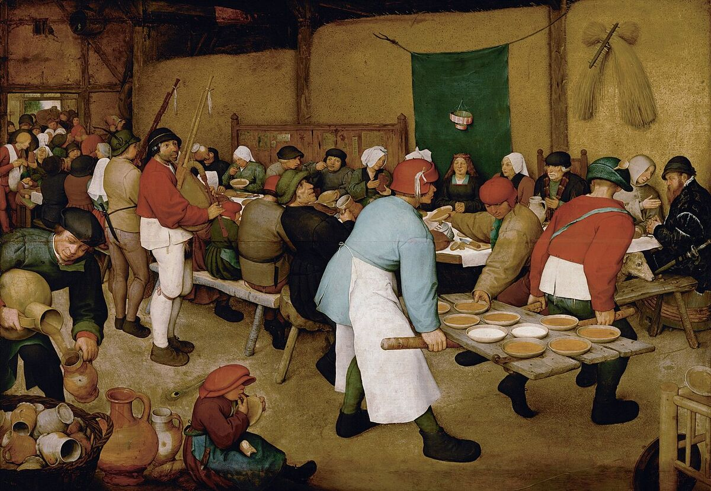
Circle is a weekly Friday gathering of 6–8 local homeschooling families who share a commitment to the Gospel of Jesus Christ and to giving their children — especially their teens — something most homeschoolers struggle to find: a close community that is spiritually grounding, intellectually serious, and genuinely fun. We meet in one home every week. We eat breakfast together, share spiritual insights, discuss classic literature, and let our older kids practice leading and serving the younger ones — while the parents have their own meaningful conversation. Then we set up lunch together and eat before heading home.
There’s no board, no elections, no rented building, no insurance paperwork, and no classes based on whatever a parent happens to feel like teaching. Instead, there’s a reading list set before the year begins, a general conference talk to read each week, a simple rhythm everyone can count on, and a group small enough that every parent knows every kid and every kid knows they belong. The goal isn’t to replace your homeschool curriculum — it’s to give your family a circle of people who are walking the same path, close enough to your home that Friday isn’t the only day you see each other.
Circle runs from September through April, with a break around Christmas. The exact calendar is decided with the families involved. The group is intentionally small — 6 to 8 families, all within about 10–15 minutes of each other. That’s not an accident. It means your kids can bike to each other’s houses. It means a Friday friendship can become a Tuesday afternoon friendship. It means when someone’s having a hard week, you’re close enough to actually help. And it means that by October, you won’t just know the other parents — you’ll know their kids, their kitchens, and their favorite lunch spot at the table.
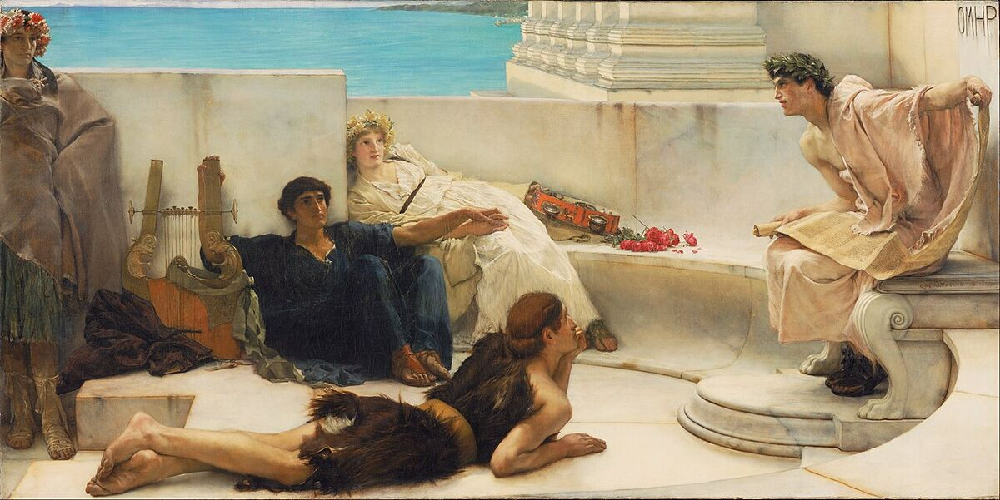
Most parents who care about passing on their faith and values to their children eventually realize that the institutions around them aren’t helping.
Church is important — but it’s a few hours a week. Your children spend the rest of their time in environments built by people who may not share your beliefs, your standards, or your vision of what a good life looks like. A Sunday lesson can’t undo what forty hours of someone else’s culture is quietly teaching.
Private schools and charter schools seem like the answer, but the deeper problem doesn’t go away. Any school large enough to need funding, accreditation, or public accountability will eventually drift toward the culture it was supposed to be an alternative to. And even in the best school, children become peer-aligned — they care most about what their classmates think, not what their parents think, and not what any thoughtful adult thinks. The peer group becomes the culture, and you lose the ability to shape it.
Homeschooling solves this. When you educate your children at home, they stay aligned with your family. They absorb your values not because you lecture them, but because they live alongside you — watching how you think, what you read, how you treat people, what you care about. Any homeschooling family can tell you: children raised at home are more likely to adopt their parents’ faith, values, and way of seeing the world.
But homeschooling has gaps. Your teen needs peers who are reading the same book. Your family needs other families walking the same path. Your children need adults outside your home who reinforce what you’re teaching — not because you coordinated a message, but because those adults genuinely believe the same things.
Circle is designed to fill exactly those gaps — without giving up what makes homeschooling work. The entire family shows up every Friday. Parents don’t drop off their teens and leave. You sit at the same table. You read the same books. You write essays too. Your children see that you think reading, writing, and discussing ideas is important — because you’re doing it alongside them. They aren’t hearing what some stranger thinks about the book. They’re hearing what you think, and what other families they know and trust think.
And it’s not just the teens. The younger children come every week. They eat with everyone, they’re cared for by the older kids, and they watch. Over the years, they grow from being helped into being helpers, from listening into discussing, from watching their older siblings write essays into writing their own. By the time they reach the reading circle, they’ve already been shaped by years of seeing what it looks like.
Circle is built around the things we believe matter most — and the one skill that makes everything else possible. We want our teens rooted in the Gospel of Jesus Christ — not as a Sunday routine, but as something that feels useful, meaningful, and real in their daily lives. We want them to notice beauty — in scripture, in nature, in a conversation, in a book written two hundred years ago. And we want them to have the master skill: the ability to read something difficult, understand it well enough to discuss it, form their own ideas, and explain those ideas clearly in writing. A person who can do this can learn anything — science, history, law, theology, business. We are not teaching subjects. We are building the capacity to learn any subject.
The reading list follows a four-year cycle of 14 readings per year — 56 readings in all. Each year carries a theme: Freedom, Justice, Courage, and Grace. The readings range from Homer and Sophocles to Tolstoy and Tolkien. Everything else — teens serving younger children, families serving each other, planning and leading events — is how these things stop being ideas and start becoming who they are.
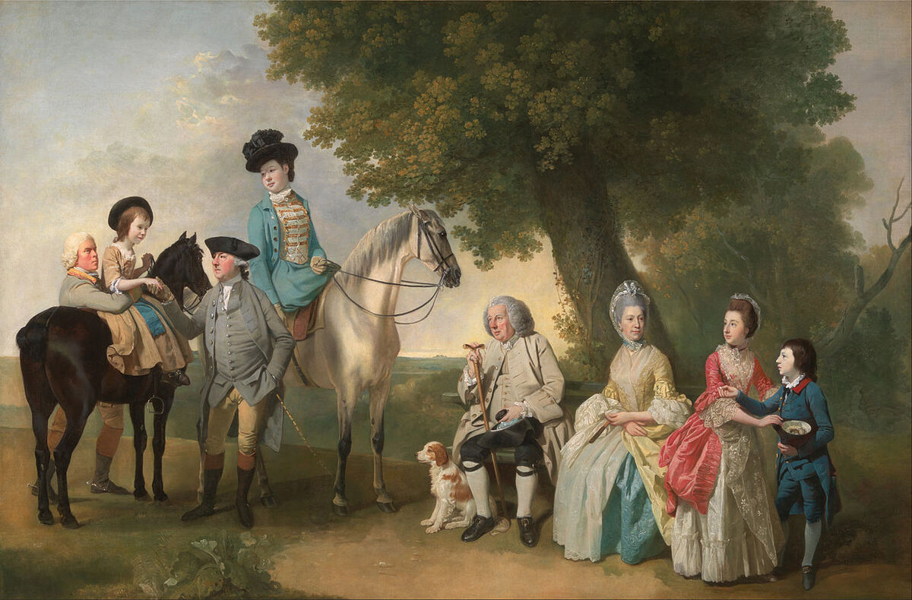
We could do all of this at home — and in many ways, we already do. But some things only happen in community.
A teen reads harder, writes better, and thinks more carefully when they know their peers are reading the same book and will see their essay. Family discussions are wonderful, but there’s something about showing up prepared in front of people outside your family that raises the bar in a way a parent alone can’t replicate.
Spiritual growth, especially for teenagers, is communal. When a teen hears another teen share something that moved them — not Mom, not Dad, but someone their own age — it lands differently. When they see that other families are also going to the temple, also reading conference talks, also trying to live the Gospel seriously, it normalizes discipleship during the very years when the world is loudly telling them to do the opposite.
And when a teen hits a hard season and doesn’t want to hear it from Mom or Dad, there’s another trusted adult at the table — someone who shares your values, knows your child by name, and reinforces what you’re teaching at home.
Homeschooling is beautiful and it can be isolating. You’re the teacher, the parent, the disciplinarian, the cheerleader — all at once. A group means your teen gets feedback on their writing from someone who isn’t you. They get to disagree with an adult who isn’t their father. They practice leading children who aren’t their siblings. The skills are the same, but the context makes them real.
There’s another quiet benefit to gathering as whole families: it changes how teens see their own. When your teenager’s friends spend time with their younger siblings — teaching them a game, making them laugh, genuinely enjoying them — those siblings stop being just annoying little brothers and sisters. They become people that other people love. And when teens get to know the parents of their friends, not just as drivers and rule-makers but as real adults with real things to say, it often helps them see their own parents differently too. The things about your family that your teenager has stopped noticing — your patience, your humor, the way you show up — become visible again when someone outside the family notices them first.
And honestly — the parents need this too. Moms and dads alike need other adults who understand their lives because they’re living the same one, close enough to actually help, talking about things that matter.
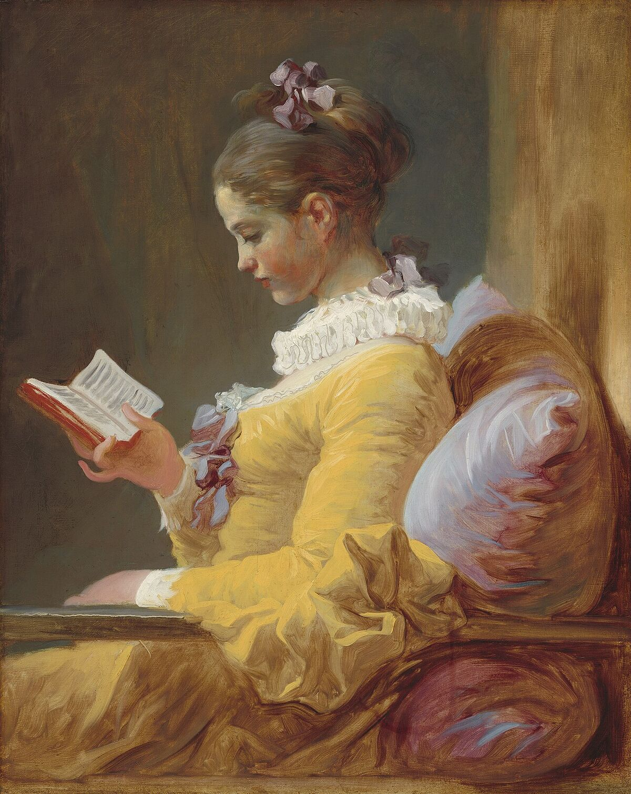
You wake up on Friday knowing exactly what the day looks like — it’s the same every week, and that’s the point.
If your family has decided you’re ready, you head to the temple at 7:30 in the morning. You might drive yourself, or you might pick up another teen on the way, or get picked up by a friend. Your parents aren’t with you — this is something you and the other youth do together. You’re dressed nicely when you leave the temple, and you stay that way for the rest of the morning.
By about 9:00, you’re at the host family’s home. Everyone’s arriving — little kids, parents, other teens. Breakfast is already out. It’s simple and it’s the same every week, which means nobody’s stressed about it. You grab a plate, sit down, and talk to whoever’s next to you. Some weeks it’s another teen, some weeks it’s someone’s six-year-old who wants to tell you about their cat. Both are fine.
Around 10:00, everyone helps clean up. Not just your family — everyone. Then you gather for a devotional. You pair up with someone — a teen, an adult, it doesn’t matter — and share something spiritual or beautiful you noticed during the week. A scripture that hit differently. Something you saw in nature. A story someone told you. After a few rounds of pairing up and sharing, a handful of people share with the whole group what they heard from their partner. Nobody’s put on the spot, but over time, you get comfortable sharing what matters to you. That’s the idea.
Then comes the part your brain has to show up for. You and the other teens (and a few adults) sit down for a discussion about the book everyone’s been reading. This isn’t a class — nobody’s lecturing you. It’s a real conversation about real ideas from books that have mattered to people for hundreds of years.
The rhythm works on a two-week cycle. On week one, you come having finished the book, and the group discusses it together — what it meant, what you noticed, what you disagreed with, what surprised you. You have a full week after that conversation to write your essay, which means the discussion actually makes your writing better because you’ve heard perspectives you hadn’t considered. On week two, you bring your essay. You trade with someone, give each other written feedback — notes in the margins, honest comments, questions — and a few people share theirs with the group. Then you start the next book.
Around 11:45, you shift gears. On a rotating schedule, one or two teens are responsible for leading a short activity with the younger kids — maybe teaching them a card game, showing them a simple magic trick, or helping them make something. It doesn’t have to be educational. It just has to be something you chose and prepared. Your turn comes around about once every six weeks, and you might pair up with another teen to plan it together. When it’s not your turn, you’re still there — helping out, playing with the kids, being someone the little ones know and look up to. The adults aren’t hovering. They trust you, and you’re learning to be trustworthy with that.
While you’re with the younger kids, the parents are having their own discussion. Then around 12:15, everyone comes back together to set up lunch. The food is simple — smoked meat, warm bread, a salad or veggie platter somebody brought. You eat, you talk, you help clean up, and by about 1:30, you head home. Your whole afternoon is free.
Once during the year — maybe twice — it’s your family’s turn to plan an event for the whole group. This is your show. You decide what it is — a hike, a service project, a game night, a bonfire, a trip to a museum. You make the plan, set the date, create the flyer, stick to a budget, assign anything that needs assigning. There’s a planning checklist with built-in deadlines so you’re not scrambling the night before — do this three weeks out, do that two weeks out, confirm this one week out. The point is to practice doing something real: having an idea, organizing it, and pulling it off for people you care about. No more than one of these events happens per month, and they’re for whole families — not just teens.
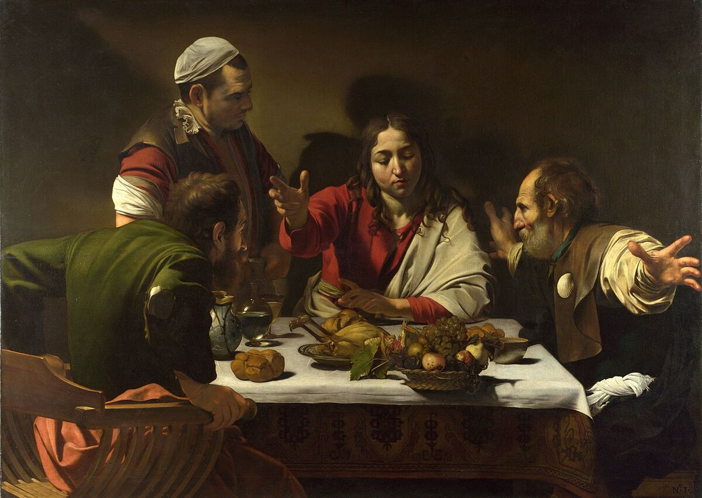
Weekly: Friday Mornings
Your week-to-week commitment is simple: Friday mornings. You show up with your family around 9:00, you eat breakfast you didn’t have to cook or pack, your kids are with people you trust and actually know by name, and you’re home by early afternoon. The reading list was set before September, so there’s no weekly scramble to figure out what’s being covered. Your teen reads and discusses one week, then writes and workshops an essay the next. Your younger kids play, or do a simple activity, or just enjoy being around older kids who are kind to them.
Each week, everyone reads a general conference talk chosen ahead of time, along with a question to think about. While the teens lead activities for the younger kids, the parents sit down for a 30-minute spiritual discussion about that talk. It’s not a formal class. It’s a small group of adults you know well, sitting together and talking honestly about their faith, their families, and what they’re learning. After the discussion, everyone comes back together to set up and share lunch.
You don’t teach a class. You don’t serve on a board. You don’t vote on anything. Your contributions rotate naturally: about once every 6–8 weeks, you bring a large salad or veggie platter for Friday lunch. If the group decides to go with a more structured plan for the younger kids, you might also lead a simple activity for them once every 6–8 weeks. That’s it.
Monthly: Family Activities
Once a month, there’s a family activity — planned and organized entirely by the teens from one family. A planning checklist with reverse-scheduled deadlines helps them learn to think ahead, and the parents work out a system (a summer workshop, a template, or both) to set the teens up for success. Some months it’s a field trip. Some months it’s a service project. Some months it’s just something fun — a bonfire, a game night, a hike. The only rule is that it’s for whole families, and no more than one per month. Each family takes responsibility for one or two events across the year, distributed as evenly as possible.
Monthly: Get-It-Done Saturdays
Once a month, the parents get together on a Saturday for a “get-it-done” day. You show up at one family’s home and help them tackle a project they’ve been meaning to get done: organizing the garage, deep cleaning, yard work, whatever life has put on hold. The teens babysit so the adults can work and talk without interruption. It’s practical, it’s an act of service, and it builds the kind of friendship where you actually know the inside of each other’s homes and lives, not just each other’s Sunday faces.
Optional: Off-Season Book Club
If there’s interest, parents may also do a book club during the off-season — reading and discussing books about education, parenting, faith, marriage, and relationships. This is optional, but it’s there for anyone hungry for that kind of conversation.
| Time | What | Details |
|---|---|---|
| 7:30 AM | Temple | Teens attend the temple together. Older teens drive and pick up younger ones. Parents stay home with younger children. |
| 9:00 AM | Breakfast Together | All families arrive. Simple, consistent breakfast is ready. Sit down, eat, and catch up. |
| 10:00 AM | Clean Up | Everyone pitches in — kids, teens, and adults. Many hands, quick work. |
| 10:15 AM | Devotional | Pair up and share something spiritual or beautiful from the week. After a few rounds, volunteers share what they heard with the whole group. |
| 10:45 AM | Book Discussion | Teens and a few adults discuss the current book (week 1) or workshop essays (week 2). Younger kids play or do a simple activity. |
| 11:45 AM | Teens Lead • Parents Discuss | One or two teens (rotating) lead an activity for the younger kids. Parents have a 30-minute spiritual discussion about the week’s conference talk. |
| 12:15 PM | Lunch Setup | Everyone comes back together to set up lunch — smoked meat, warm bread, and a salad/veggie platter. |
| 12:30 PM | Lunch Together | Eat, talk, enjoy each other’s company. |
| ~1:30 PM | Clean Up & Head Home | Everyone helps clean up. Afternoon is free. |
Two-week rhythm: Week 1 — read the book, discuss it together. Week 2 — bring your essay, trade and give feedback, start the next book.
Teens’ turn with younger kids: Rotating schedule, about once every six weeks. Teens may pair up to plan together.
Salad rotation: Each family brings a large salad/veggie platter about once every 6–8 weeks.
Circle was designed by Jay and Libby McCarthy, who have seven children ranging from age two to seventeen. They have homeschooled all of them.
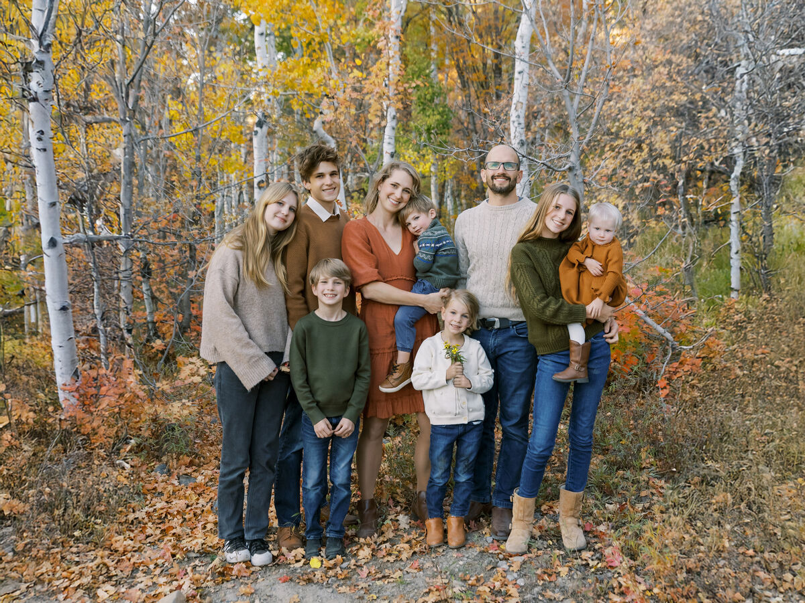
The reading list, the Friday rhythm, the four-year cycle, the essay program — none of it was borrowed from a curriculum catalog. It was built from scratch by two people who care deeply about education, have spent their lives thinking about how learning works, and wanted something for their own children that didn’t exist yet.
Libby studied Applied Mathematics at Brown University and earned a Master’s degree in Computational and Mathematical Engineering at Stanford before leaving to raise their family. Jay double-majored in Computer Science and Mathematics by nineteen, completed his PhD at twenty-two, and has held faculty positions in computer science at BYU, Vassar College, and UMass Lowell, where he earned tenure. He has also founded and led several technology companies as CTO.
They bring that same rigor to Circle — not because they want to turn it into a school, but because they believe children deserve a curriculum designed with the same care and seriousness that goes into anything worth doing. The books were chosen deliberately. The essay topics were written to push real thinking. The structure was tested on their own family first.
Jay has read every book in the cycle — most of them more than once. He didn’t assemble a list; he built a curriculum out of books he knows, loves, and has thought about for years. When your teen sits down for a Friday discussion, the person across the table has already marked the same passages and wrestled with the same questions.
Circle is not a co-op someone found online. It was built by parents who know what excellence looks like in a classroom, in a company, and in a home — and who decided their kids and their friends’ kids deserved all three.
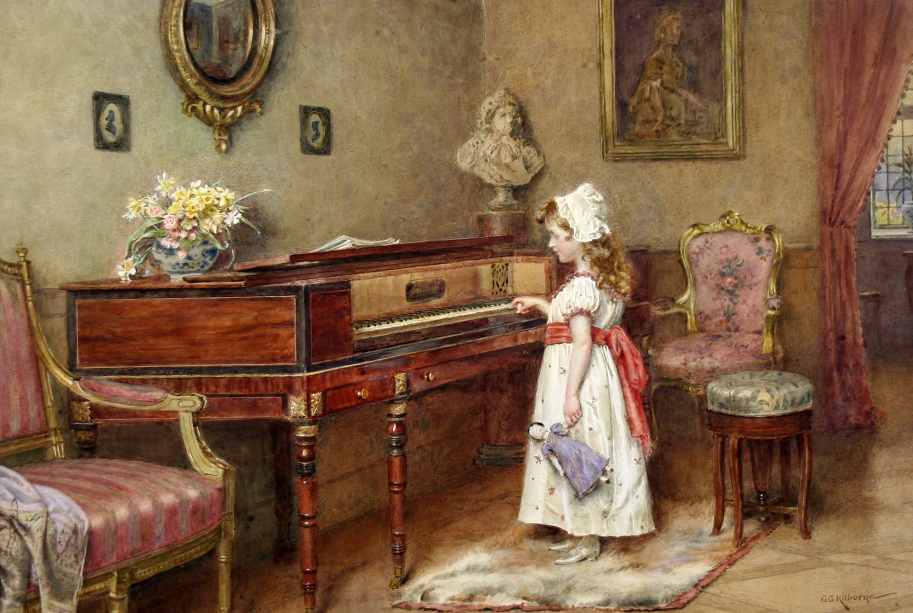
People often ask us what we do for school beyond Friday. Circle is about a quarter of our children’s reading and one day of their week. The rest of the time, they are at home, becoming accomplished.
We use that word deliberately. We want to raise young people who read extensively, who can sit down at a piano and play a hymn, who can write a clear essay and hold a serious conversation, who understand mathematics and modern languages, and who have the discipline to work hard and the freedom to spend long afternoons pursuing their own interests. We don’t think this is an unreasonable standard. We think it is exactly what an intentional education ought to produce.
Here is how it works in our family. We’ve refined this over many years and many children, and we share it because other families ask — not because we think it’s the only way, but because it’s a way that works for us.
Learning to read (around age 6). We sit down with each child for about an hour a day and focus on reading, letter formation, and basic math. This is the most hands-on stage and typically takes a little under two years. We’ve tried many curricula and don’t have a strong favorite — it seems to matter more how consistently you show up than what you choose.
Independent work (around age 8 onward). Once they can read and do basic math on their own, they begin the pattern that will carry them through the next decade. They work four days a week for roughly two hours a day, and by design they are done before lunch. The rest of the day is theirs.
Their studies include:
-
Mathematics. They work through Khan Academy, advancing about 1% each day. This steady pace puts them in pre-calculus around thirteen and college calculus by fifteen. After that they shift toward SAT and ACT preparation and more personal projects.
-
Reading. The Circle cycle accounts for about a quarter of their reading. For every classic they read with the group, they also read: a work of nonfiction, from classic philosophy to modern popular science; a topical history, from ancient Rome to modern China; and a modern novel, from Harry Potter to Brandon Sanderson. The youngest readers target twenty-five pages a day; older ones, fifty.
-
Family reading. The family reads scriptures together every day. Rather than follow Come, Follow Me strictly, we read an entire volume of scripture for the year — all of the Old Testament, for example. In addition, Dad reads one book aloud to the whole family, usually a longer history. And Dad reads a chapter of a different book to each child individually each day — this is how most of our children first experience The Lord of the Rings, the Mistborn trilogy, and other books that become lifelong favorites.
-
Writing. They begin with summaries — book reports, essentially — around age eight, and grow into writing essays by eleven or twelve. They are raised to consider writing about what you read to be an inseparable part of the reading experience. We’ve had a writing tutor for years, partly because children are more willing to accept feedback from someone who isn’t their parent.
-
Modern languages. They work through Khan Academy’s programming courses and then pursue their own projects based on their interests. We consider programming a language in every meaningful sense — it teaches logic, precision, and the ability to build something real from nothing but careful thought.
-
Music. Each child studies piano with a tutor, has a weekly lesson, and keeps a regular practice schedule. Our goal is not to produce concert pianists — it’s for them to be able to play hymns on their missions and to enjoy playing for the rest of their lives.
-
Physical education. The girls do ballet. The boys lift weights, run cross country or track, or join a sports team at the high school.
The goal is for our children to be finished with formal schoolwork by lunch and to have extensive free time throughout the day — time they spend with their siblings, outdoors, and pursuing their own interests. Other things — art, creative writing, science experiments — are not assigned. They are chosen, often inspired by something encountered in a nonfiction book or a Friday discussion. And our children actually do them, because they have the time and the curiosity.
Our oldest was accepted to BYU. We are confident in the rest.
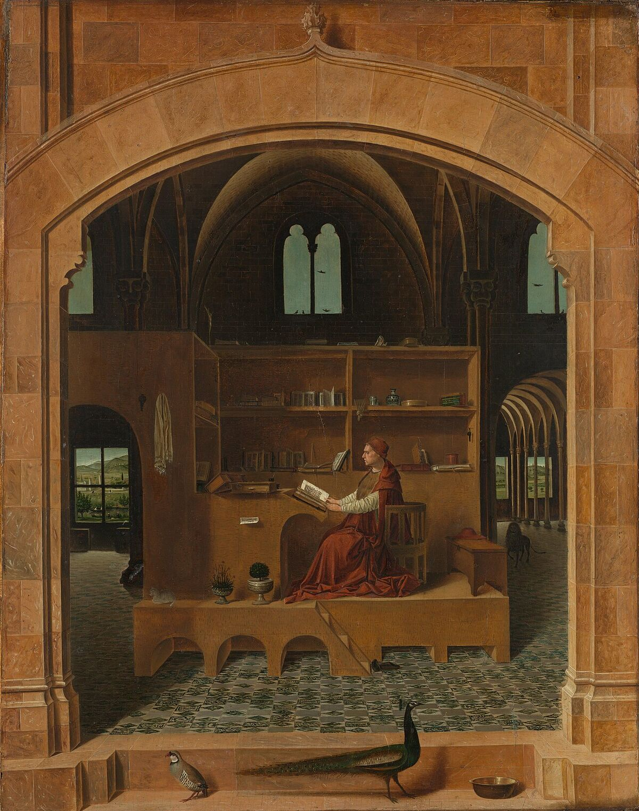
The Four-Year Cycle
Circle’s reading curriculum is a four-year rotating cycle of 14 readings per year — 56 readings total across all four years. Any year can be a student’s first year; the cycle is not progressive, and no single year is harder than another. Each year is balanced in difficulty so that a student entering in Year 3 faces the same challenge as one entering in Year 1. Years 2, 3, and 4 each include one longer book assigned over the Christmas break to give students six weeks instead of the usual two. The 56 readings are organized into 14 thematic arcs that run across all four years, so that each arc tells its own story — one reading per year, building a sequence that only becomes fully visible after the complete cycle. Essay topics occasionally reference books from other years — these are opportunities for students who have completed those years, not requirements. A student starting in any year will find everything they need within that year; a student returning for a second or third pass will find new depths in familiar questions.
* = assigned over Christmas break
Notes
On Reading
Plan to read fifty pages a day, every day, no matter the book. Fourteen days at fifty pages covers nearly 700 pages — more than enough for almost every book in the cycle. If the book is short, read fifty pages anyway and read the book a second or third time; short books reward rereading more than any other kind.
Plays and short works (under 200 pages) should be read at least twice — once silently, then again aloud, ideally with a partner or small group. Reading aloud slows students down and forces attention to language, rhythm, and structure that silent reading skips. Epics and verse translations also benefit from reading key passages aloud; the music of the line is part of the meaning. For longer novels, a single careful reading is sufficient.
Always read with a notebook next to you. Write down questions, reactions, and anything that strikes you — not summaries. Write the page number next to every note so you can find the passage again when you need it for a discussion or an essay. A student who arrives at the table with marked passages and page references is prepared; a student who read every word but wrote nothing down is starting over. Thinking about potential essay topics during reading, not after, produces stronger essays and richer discussions.
When you write an essay, you are not trying to fill a page. Choose a thesis you actually care about or have a strong opinion on. State it clearly. Explain what follows from it. Support it from the text. This can be done excellently in 800 words. It can be done poorly in 800 words. It can be done poorly in 5,000 words. Most essays will be about one sheet of paper, front and back, with modest font and margin choices. We are not going to police length, but this gives you a sense of what is expected: a focused argument, not a word count.
On Translations (Epics)
Prose translations of the epics are acceptable, but verse translations are preferred — they preserve the rhythm and music that are inseparable from the meaning of these poems. It is valuable when different students in the group read different translations. When multiple styles are represented in the room, the discussion is richer: students see that translation is interpretation, and that every choice a translator makes shapes what the poem seems to say. Specific translation recommendations are included in each year’s reading notes.
On Abridged Editions
Two books in the cycle — The Count of Monte Cristo and Les Misérables — are assigned in abridged form. These are novels whose unabridged editions exceed a thousand pages, and the goal is a manageable two-week read that preserves the complete narrative arc. Students who love the abridged version should be encouraged to read the full text over the summer. Specific edition recommendations are included in each year’s reading notes.
On Break Books
Years 2, 3, and 4 each include one book assigned over the Christmas break, giving students approximately six weeks of reading time instead of the usual two. These are:
- Year 2: Rough Stone Rolling by Richard Lyman Bushman (~740 pages)
- Year 3: Middlemarch by George Eliot (~800 pages)
- Year 4: Anna Karenina by Leo Tolstoy (~800 pages)
Year 1 has no break book. The break book is discussed at the first session after Christmas (late January).
1 — Opener
Each year begins with a short masterpiece — something under 150 pages that can be finished with confidence in the first week. These books are small in scale but enormous in craft. They set the tone for the year and remind students that great literature does not require great length. The sequence moves from Hemingway’s clarity, to Voltaire’s satirical wit, to Conrad’s moral darkness, to Kafka’s surreal estrangement.
2 — Manly Virtue
These books explore courage, loyalty, and sacrifice through the lens of men (or creatures) who protect what they love at cost to themselves. London’s animals embody wild valor. Pressfield’s Spartans face certain death with discipline. Kipling and Schaefer show virtue earned through hard labor and self-sacrifice. Tolkien’s hobbit proves that ordinary courage — the decision to stay when you could go home — may be the deepest kind.
3 — Epic
The foundational long poems of Western civilization. Homer’s Odyssey is the original homecoming; his Iliad is the original war poem. Virgil’s Aeneid is Rome’s answer to both. Dante’s Inferno — guided by Virgil himself — extends the epic tradition into the Christian world. Each stands alone, but a student who reads all four across the cycle will see how each poet builds on and argues with those who came before.
4 — Gothic
Scheduled for late October every year. These books explore horror, doubling, and moral transgression. Shelley asks what we owe our creations. Stoker pits Victorian propriety against ancient evil. Stevenson and James split the self and haunt the innocent. Wilde traces the cost of living without conscience. The arc moves from Romantic to late-Victorian Gothic, tracing how the genre matured.
5 — British Novel
Four major novels by (mostly) women that ask what it means to maintain moral independence in a world that punishes it. Brontë’s Jane Eyre is faith and self-respect under trial. Her sister’s Wuthering Heights is passion without restraint. Eliot’s Middlemarch is the most ambitious novel in English — a whole society rendered from the inside. James’s Portrait of a Lady watches a free woman walk into a trap with her eyes open.
6 — Greek Philosophy
Begins with drama and ends with philosophy, tracing the Greek and Roman intellectual tradition. Sophocles shows fate destroying the great; Euripides and Aeschylus show suffering inflicted by gods and humans. Plato dramatizes the trial and death of Socrates — philosophy as a life-and-death practice. Marcus Aurelius closes the arc with private notes on how to live when the world offers every reason not to.
7 — Survival → Sci-Fi
Begins with the original survival novel and moves into speculative fiction, all asking the same question: what kind of society do we build when we start from scratch? Crusoe builds civilization alone on an island. Herbert imagines politics and ecology on a desert planet. Heinlein argues that citizenship must be earned through service. Huxley warns what happens when comfort replaces freedom.
8 — Real World
Non-fiction and fiction that engage directly with the world as it is — survival, history, justice, and power. Lansing’s Endurance is the greatest true survival story ever told. Bushman’s Rough Stone Rolling is serious Latter-day Saint history written by a faithful historian. Portis’s True Grit follows a fourteen-year-old girl who will not rest until justice is done. Machiavelli’s Prince strips away every comforting illusion about how power works.
9 — Women & Society
Four novels about women navigating social expectations, each asking what a woman owes to herself versus what she owes to her world. Austen appears three times — Pride and Prejudice (wit and misjudgment), Emma (self-deception and growth), and Persuasion (constancy and second chances) — before Alcott’s Little Women shifts the question from Regency England to Civil War America.
10 — British Wit
British writers who use humor, irony, and narrative voice as moral instruments. Dickens is here twice: Great Expectations (comic and crushing) and A Tale of Two Cities (sacrifice and revolution). Wilde’s two comedies are pure verbal brilliance on the surface and sharp social critique underneath. Swift’s Gulliver’s Travels begins as satire and ends as one of the most savage indictments of humanity ever written.
11 — American
The American literary tradition from Melville to Steinbeck. Fitzgerald and Hemingway diagnose the Lost Generation from opposite angles. Steinbeck bears witness to the Dust Bowl. Melville chases the white whale through the most ambitious American novel ever attempted. Hawthorne reaches back to Puritan New England to ask whether a community built on shame can survive its own hypocrisy.
12 — Big Questions
Scheduled near Easter each year, alternating between C.S. Lewis/Chesterton and Shakespeare. Lewis’s Screwtape and Great Divorce examine damnation and salvation through satire and vision. Shakespeare’s Macbeth and Hamlet wrestle with ambition, guilt, death, and duty. Chesterton’s Orthodoxy and Lewis’s Mere Christianity make the case for faith through paradox and reason. The Lewis-Shakespeare-Lewis-Shakespeare rotation ensures every student encounters both traditions in their first two years.
13 — Russian
Tolstoy and Dostoevsky, alternating across the cycle. The Cossacks and Hadji Murad introduce Tolstoy through accessible novellas. The Brothers Karamazov is Dostoevsky’s summit — the Grand Inquisitor chapter alone justifies the entire curriculum. Crime and Punishment is his tightest, most propulsive novel. Anna Karenina is Tolstoy’s masterpiece of love, family, and faith, assigned over the Christmas break to allow time for its full scope.
14 — Closer
Each year ends with a book that rewards the work of the year — something gripping, satisfying, and thought-provoking enough to carry into the summer. Twain’s Huckleberry Finn is funny and subversive. Dumas’s Monte Cristo is the ultimate revenge story. Lee’s Mockingbird is moral courage made personal. Hugo’s Les Misérables is grace, justice, and redemption on an epic scale.
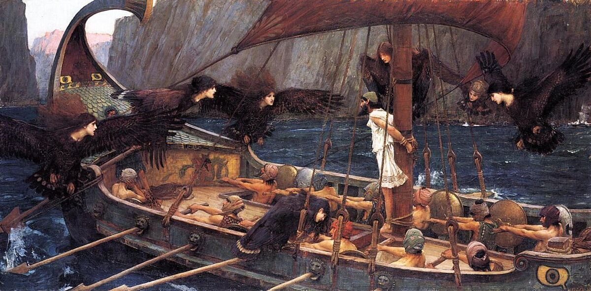
Odysseus wanders freely but wants nothing more than to come home — freedom is the question this year keeps asking, not the answer. Huck Finn lights out for the territory because civilization feels like captivity. The Screwtape Letters examine how souls freely choose or reject God, one small decision at a time. Jane Eyre insists on her freedom of conscience even when love and security are the price. Even the Odyssey’s structure — a man who could stay anywhere but chooses home — asks what freedom is actually for.
The Old Man and the Sea

We open the year with a short, beautiful novella that every student can finish with confidence. Santiago’s struggle with the marlin is simple enough to grasp on first reading but deep enough to reward careful attention — exactly the kind of text that teaches a new group how to discuss well. Hemingway’s stripped-down prose also sets a standard for their own writing: say what you mean, cut what you don’t. It models the discipline we want them to carry into every essay they write this year.
Where to Find It: Amazon (Scribner) · ThriftBooks
Essay Ideas
- Santiago loses the marlin. Did he fail? What does this story argue success actually means?
- How does Hemingway use the boy, Manolin, to show us who Santiago really is?
- Santiago says, “A man can be destroyed but not defeated.” Is this true? When might it not be?
- Hemingway leaves almost everything unstated. Choose one passage where what is not said matters more than what is, and explain how it works.
- For students who have completed Year 4: Compare Santiago’s perseverance with Bilbo’s in The Hobbit. Both are small, ordinary figures who persist against overwhelming odds. What does each author argue heroism actually looks like when it belongs to someone the world would overlook?
Call of the Wild + White Fang

These two novellas are mirror images: one traces a domesticated dog into wildness, the other traces a wild animal toward civilization. Reading them together forces students to ask whether “nature” and “nurture” are really opposites or just two faces of the same drive to survive. London writes with raw energy that keeps the pages turning, making this the right early assignment to prove that serious literature can also be thrilling. The paired structure also gives students their first experience comparing two texts in a single essay.
Where to Find It: Public Domain · Penguin Classics (combined) · ThriftBooks
Essay Ideas
- Buck moves toward wildness; White Fang moves toward domestication. Which journey does London portray as more natural, and how can you tell?
- Both books depict cruelty from humans. How does London use violence to make a moral argument without ever stating one directly?
- Is Buck freer at the end of Call of the Wild than he was at the beginning? What does London seem to think freedom costs?
- Choose one scene from each book where an animal makes what looks like a moral choice. Are these truly moral decisions, or is London projecting human meaning onto instinct?
The Odyssey

The Odyssey is the foundation of Western storytelling — the original hero’s journey, the original homecoming. By the third assignment, students are ready for something ambitious, and this delivers: monsters, gods, temptation, loyalty, and a man who wants nothing more than to get home to his family. It teaches students to read translated verse, to track epithets and repeated structures, and to see how a 2,800-year-old poem still describes the tensions between adventure and responsibility, cleverness and honor. Every book they read after this one will be in conversation with it.
Prose translations are acceptable, but verse translations are preferred. It enriches discussion when students read different translations — Fagles, Fitzgerald, and Pope all bring different strengths, and comparing how each renders the same passage teaches students that translation is itself an act of interpretation.
Where to Find It: Fagles tr. (Penguin Classics) — Amazon · Fitzgerald tr. — Amazon · Pope tr. — Project Gutenberg · Butler tr. (prose) — Project Gutenberg · ThriftBooks
Essay Ideas
- Odysseus is called “the man of many ways.” Is his cleverness a virtue or a flaw? Where does it help him, and where does it cost him?
- Penelope waits twenty years. Is her story one of passivity or of a different kind of heroism?
- The Greeks took hospitality (xenia) as a sacred duty. How does Homer use good and bad hospitality to show the reader who is civilized and who is not?
- Odysseus is offered immortality by Calypso and refuses. What does his choice reveal about what Homer thinks makes a life worth living?
- Compare Telemachus at the beginning of the poem to Telemachus at the end. What turns him from a boy into a man?
- For students who have completed other years: The Odyssey is one of four epics in the cycle — alongside the Iliad, the Aeneid, and the Inferno. If you have read one or more of the others, compare how each poem defines what a hero is for. Odysseus wants to go home; Achilles wants glory; Aeneas obeys duty; Dante seeks salvation. What does each answer reveal about the civilization that produced it?
Frankenstein

Frankenstein lands on Halloween week, but the real reason it’s here is that it asks one of the deepest questions in literature: what do we owe the things we create? Shelley wrote this at nineteen, which gives it immediate credibility with teenagers — proof that young people can produce work that lasts centuries. The novel is also a masterclass in narrative structure, with its nested storytelling and unreliable perspectives. After the epic sweep of the Odyssey, this shorter, more intimate novel brings the focus back to individual conscience and consequence.
Where to Find It: Public Domain · Penguin Classics (1818 text) · Penguin Classics (1831 text) · ThriftBooks
Essay Ideas
- Who is the real monster in this novel — the creature or Victor Frankenstein? Build your case from the text.
- The creature asks Victor for a companion. Was Victor right to refuse? What are the strongest arguments on each side?
- Shelley wrote Frankenstein at nineteen. How does knowing the author’s age change the way you read Victor’s ambition and his failures?
- The novel is told through layers of narration — Walton, Victor, the creature. Why does Shelley choose this structure instead of telling the story straight? What does it do to your trust in each narrator?
- For students who have completed Year 4: Compare Victor Frankenstein’s refusal to face what he has created with Dorian Gray’s refusal to face his portrait. Both men try to separate themselves from the consequences of their choices. How does each novel use horror to argue that this separation is impossible?
Jane Eyre

Jane Eyre is the longest assignment so far, and it earns every page. Jane is poor, plain, orphaned, and completely unwilling to surrender her moral independence for comfort or love — a character who models the kind of quiet, unyielding integrity we want these students to recognize and admire. The novel also wrestles openly with faith, asking how a person holds onto God when the world offers every reason to let go. Brontë’s gothic atmosphere and emotional intensity keep even reluctant readers turning pages. This is the book that teaches the group they can handle a big novel and come out the other side with something to say.
Where to Find It: Public Domain · Penguin Classics · ThriftBooks
Essay Ideas
- Jane refuses to stay with Rochester when she learns the truth. What does her decision reveal about the difference between love and self-respect?
- Jane says, “I am no bird; and no net ensnares me.” How does Brontë use images of captivity and freedom throughout the novel to define what Jane is fighting for?
- How does Jane’s faith change from her childhood at Lowood to her final choices? Is the novel arguing for religion, against it, or something more complicated?
- Compare Jane’s treatment as a child at Gateshead with her treatment at Thornfield. Does the world change, or does Jane?
- St. John Rivers offers Jane a life of religious service. Why does she refuse something that looks, on the surface, like the right thing to do?
- For students who have completed Year 4: Compare Jane Eyre with Isabel Archer in The Portrait of a Lady. Jane is constrained by poverty and social position but chooses wisely. Isabel is free, wealthy, and independent but chooses disastrously. What does the contrast reveal about the relationship between external freedom and good judgment?
Oedipus Rex + Antigone

After the long pull of Jane Eyre, students get a shorter assignment — but not an easier one. These two plays tell the story of a family destroyed by fate, pride, and the collision between divine law and human authority. Oedipus Rex asks whether a man can escape what the gods have determined; Antigone asks whether a person must obey a law they know is unjust. Reading them together shows students that a single family’s tragedy can illuminate questions we still argue about today. The brevity of Greek drama also teaches a different skill: reading dense, compressed text where every line carries weight.
Where to Find It: Public Domain · Penguin Classics — Fagles tr. · ThriftBooks
Essay Ideas
- Antigone defies Creon because she believes divine law outweighs human law. Is she right? Where have you seen this same conflict in the modern world?
- Is Oedipus responsible for his fate? He didn’t choose his actions knowingly, but the gods hold him accountable. What does Sophocles seem to believe about guilt and intention?
- Compare Antigone’s stubbornness with Creon’s. How are they more alike than either would admit?
- These plays are nearly 2,500 years old. Choose one moment that feels like it could have been written yesterday and explain why it still resonates.
- For students who have completed Year 2: Compare Antigone’s defiance with Medea’s revenge and Prometheus’s rebellion. All three Greek protagonists refuse to submit to authority. How does each playwright judge the act of defiance — as heroic, as tragic, or as something in between?
Robinson Crusoe

Robinson Crusoe is the original survival story — the book that invented an entire genre. Crusoe is shipwrecked, alone, and forced to build a life from nothing, which makes it a natural companion to Endurance in January: one imagined survival, one real. But Defoe is also writing about faith — Crusoe’s slow, reluctant turn toward God is one of the most honest conversion narratives in English literature. As the last book before the Christmas break, it sends students into the holiday thinking about providence, self-reliance, and what a person discovers about themselves when everything comfortable is stripped away.
Where to Find It: Public Domain · Penguin Classics · ThriftBooks
Essay Ideas
- Crusoe’s relationship with God changes over the course of the novel. Trace that arc — where does it begin, what triggers each shift, and where does it end?
- Crusoe calls Friday his “servant” and later his “companion.” How does Defoe portray their relationship, and what does it reveal about Crusoe’s understanding of other people?
- Is Crusoe’s survival a story about human ingenuity or about divine providence? Does the novel want you to choose one, or hold both?
- Compare Robinson Crusoe’s solitude with Santiago’s in The Old Man and the Sea. How does each author use isolation to reveal character?
Endurance

The group returns from Christmas break with a true story of survival that makes Robinson Crusoe look comfortable. Shackleton’s failed Antarctic expedition — where every man survived against impossible odds — is one of the greatest leadership case studies ever written. Lansing tells it with the pacing of a thriller, which makes it an ideal re-entry book: gripping enough to pull students back into reading mode, substantial enough to generate serious discussion about what kind of person others will follow when everything falls apart. Coming right after Crusoe, students can compare fictional and real survival, imagined providence and actual decision-making under pressure.
Where to Find It: Amazon (Basic Books) · ThriftBooks
Essay Ideas
- What makes Shackleton an effective leader? Choose two or three specific decisions and explain what they reveal about his leadership philosophy.
- Compare Crusoe’s survival (alone, providential) with Shackleton’s (communal, strategic). What does each story argue about what keeps people alive?
- Lansing writes about a real event but uses novelistic techniques — pacing, characterization, tension. Choose one passage where you can see Lansing shaping the story and explain what effect his choices have on the reader.
- The expedition failed in its original mission. Is Endurance a story about failure or success? What does your answer reveal about how you define those words?
Pride & Prejudice

Pride and Prejudice lands on Valentine’s week, but this is no simple love story — it’s a comedy about how badly we misjudge people and how painfully we learn to see clearly. Austen’s wit is razor-sharp, her sentences are perfectly constructed, and Elizabeth Bennet is a heroine who wins by thinking, not by suffering. After two survival stories, this shift in tone and setting is deliberate: students need to see that literature about drawing rooms and dances can be just as serious and demanding as literature about shipwrecks. Austen also teaches them to read irony, a skill that will pay dividends in Gatsby, Twain, and everything after.
Where to Find It: Public Domain · Penguin Classics · ThriftBooks
Essay Ideas
- Both Elizabeth and Darcy must overcome a form of pride. How are their prides different, and what does it take to break each one down?
- Austen’s narrator often says one thing and means another. Choose a passage where irony is doing the real work and explain what Austen actually wants the reader to understand.
- Mr. Bennet is funny, intelligent, and largely useless as a father. How does Austen use humor to disguise a serious critique of his character?
- Compare Elizabeth Bennet with Jane Eyre. Both refuse to compromise their integrity for security. How do they differ in what they’re willing to fight for?
- For students who have completed Year 2: Compare Elizabeth and Darcy’s courtship with Emma and Mr. Knightley’s. In both novels, the heroine must learn to see clearly. But Emma must also learn to be reformed by someone she recognizes as better than she is. What does each novel argue about the role of humility in love?
Great Expectations

Great Expectations is Dickens at his most personal and most controlled — a novel about a boy who is ashamed of where he comes from and learns, painfully, that the people he looked down on were the ones who truly loved him. Pip’s journey from the forge to London and back is a story about ambition, class, gratitude, and the difference between being a gentleman and being a good man. At 500 pages it’s a demanding read, but Dickens writes with such energy and humor that the pages move. This is also the book that teaches students how a great novelist uses recurring images — chains, hands, fire, mist — to build meaning across hundreds of pages.
Where to Find It: Public Domain · Penguin Classics · ThriftBooks
Essay Ideas
- Pip is ashamed of Joe. What does Dickens want the reader to feel about that shame, and how does he make us feel it?
- Who is the true gentleman in this novel — Pip, Joe, Herbert, or Magwitch? Define what Dickens means by the word and defend your choice.
- Miss Havisham and Magwitch both try to shape a young person into an instrument of revenge. Compare their methods and their results.
- Dickens wrote two endings for this novel. If you know both, which is truer to the story he told? If you only know one, argue whether Pip has earned the ending he gets.
- Compare Pip’s social ambition with Gatsby’s. How does each novel treat the desire to become someone you’re not?
The Great Gatsby + The Sun Also Rises


Fitzgerald and Hemingway were friends, rivals, and the two defining voices of 1920s American literature. Reading them together reveals two very different diagnoses of the same disease: a generation that survived the Great War and came home to find that the old meanings — honor, love, purpose — no longer held. Gatsby romanticizes the loss; Sun Also Rises refuses to. Students already know Hemingway’s voice from the opening week, so they’ll feel the contrast with Fitzgerald immediately. This pairing teaches them to read two authors against each other and to see how style itself is an argument about how to live.
Where to Find It: The Great Gatsby: Public Domain · Amazon (Scribner) · ThriftBooks The Sun Also Rises: Public Domain · Amazon (Scribner) · ThriftBooks
Essay Ideas
- Gatsby believes in the green light; Jake Barnes believes in very little. Which response to a broken world does its author seem to respect more, and how can you tell?
- Both novels are narrated by observers (Nick, Jake) rather than by the central figures. Why? What does this choice do to the reader’s relationship with Gatsby and Brett?
- Hemingway and Fitzgerald were famous friends who criticized each other’s work. Choose one passage from each novel that you think the other author would have written differently, and explain why.
- Both novels depict people spending lavishly and living recklessly. How does each author use wealth and excess to make a moral argument?
The Screwtape Letters + The Great Divorce


These two books land at Easter because they wrestle with the questions that matter most this time of year: how do people choose damnation, and what does salvation actually require? Screwtape approaches it through satire — a senior demon coaching a junior one on how to damn a human soul — while The Great Divorce approaches it through vision — a bus ride from Hell to the outskirts of Heaven. Together they show Lewis thinking about the same problem from two angles, and students get to see how a brilliant mind uses humor, imagination, and ruthless honesty to explore the deepest spiritual questions. Both are short, accessible, and genuinely enjoyable to read — but the ideas they contain will stay with these students for years.
Where to Find It: The Screwtape Letters: Amazon (HarperOne) · ThriftBooks The Great Divorce: Amazon (HarperOne) · ThriftBooks
Essay Ideas
- Screwtape says the safest road to Hell is “the gradual one — the gentle slope, soft underfoot.” Choose one of Screwtape’s strategies that you find most convincing and explain why it works.
- In The Great Divorce, several ghosts refuse to stay in Heaven. Choose one ghost and explain what Lewis is saying about the specific sin or self-deception that keeps them from accepting joy.
- Lewis writes about damnation with humor. Why? Does comedy make his argument more persuasive or less serious?
- Compare Lewis’s vision of how people lose their souls with Sophocles’ vision of how pride destroys Oedipus and Creon. Do these authors agree about the root cause of human ruin?
- For students who have completed Year 4: In The Great Divorce, Lewis argues that the damned get what they truly want — they choose Hell by refusing to give up the one thing that keeps them from joy. Compare this with Dante’s Inferno, where every punishment mirrors the sin. Do Lewis and Dante agree about the nature of damnation?
The Cossacks + Hadji Murad

These two novellas bookend Tolstoy’s career — The Cossacks written as a young man, Hadji Murad finished just before his death — and together they form the richest short introduction to the greatest novelist who ever lived. Both are set in the Caucasus, both explore the collision between Russian civilization and the fierce independence of the mountain peoples, and both ask what it means to live authentically. Olenin in The Cossacks prefigures Levin in Anna Karenina — the idealist who can’t quite commit to the simpler life he admires. Hadji Murad is pure concentrated tragedy: a warrior caught between two empires with no way out. Students will see Tolstoy young and Tolstoy old, and understand why he matters.
Where to Find It: Penguin Classics (combined) · ThriftBooks
Essay Ideas
- Olenin admires the Cossack way of life but cannot fully enter it. What holds him back, and what does Tolstoy seem to think about his failure?
- Hadji Murad is a warrior who switches sides. Is he a traitor, a pragmatist, or something else? How does Tolstoy want you to see him?
- Both novellas are set in the same region but written decades apart. How does Tolstoy’s view of the Caucasus and its people change between the two works?
- Compare Olenin’s search for meaning with Gatsby’s or with Pip’s. What does each author believe about the possibility of reinventing yourself?
- For students who have completed Year 4: These novellas are Tolstoy in miniature. If you have read Anna Karenina, compare Olenin’s idealism with Levin’s. Both men search for authentic life outside the drawing rooms of Petersburg and Moscow. Does the older Tolstoy answer the question the younger Tolstoy was asking?
Huckleberry Finn

We end the year with the novel Hemingway said all of American literature comes from. Huck Finn is funny, adventurous, and deeply subversive — a book about a boy who decides to help a runaway slave and believes he’ll go to Hell for it. That moral crisis, where Huck’s conscience tells him he’s sinning but the reader knows he’s doing the only right thing, is one of the most powerful moments in literature and a perfect question to close the year on: when everything you’ve been taught says one thing and your heart says another, which do you follow? After a year of reading, discussing, and writing, these students are ready for Twain’s challenge. It sends them into the summer thinking.
Where to Find It: Public Domain · Penguin Classics · ThriftBooks
Essay Ideas
- Huck decides to help Jim and says, “All right, then, I’ll go to Hell.” What makes this moment so powerful, and what is Twain saying about the relationship between morality and social teaching?
- Twain uses humor constantly, even in scenes about slavery, violence, and death. Why? Does the comedy strengthen or weaken his moral argument?
- Compare Huck’s moral education on the raft with Pip’s moral education in London. Which character grows more, and what does each novel say about where real learning happens?
- The ending of Huckleberry Finn — Tom Sawyer’s reappearance and the “freeing” of Jim — has been criticized for over a century. Is it a failure of the novel, or is Twain making a deliberate point? Defend your reading.
- Look back at the year’s reading — and at any other years you have completed. Which character from the entire cycle would Huck Finn most understand, and why?
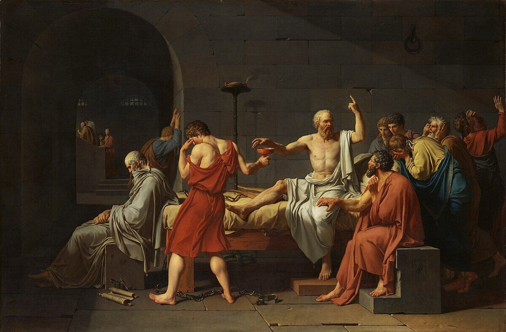
Achilles withdraws from battle because he was treated unjustly — the entire war turns on a question of what is owed. The Grand Inquisitor asks whether God’s justice is bearable, or whether humanity would rather trade freedom for bread. The Grapes of Wrath demands economic justice for people the system has discarded. Monte Cristo enacts personal justice so total it becomes indistinguishable from revenge. Macbeth destroys justice by seizing what isn’t his, and the play watches the moral order reassert itself through blood.
Candide

Year 2 opens with a short, savage satire that asks whether optimism is wisdom or delusion. Voltaire wrote Candide as a direct attack on Leibniz’s “best of all possible worlds” — a philosophy that sounds comforting until the world starts killing people. The novella is funny, fast, and philosophically sharp, making it an ideal opener: every student can finish it in a week, and no one will be bored. Like Hemingway’s Old Man and the Sea in Year 1, it teaches the group how to discuss together before the reading gets heavier. By the end, students will have to decide whether Candide’s conclusion — “we must cultivate our garden” — is wisdom, resignation, or cowardice.
Where to Find It: Public Domain · Penguin Classics · ThriftBooks
Essay Ideas
- Voltaire attacks Pangloss’s optimism relentlessly. Is he arguing that the world is bad, or that refusing to see it clearly is bad? What’s the difference?
- Candide ends with “we must cultivate our garden.” Is this a philosophy of wisdom or of surrender? Defend your reading.
- Compare Voltaire’s use of humor to make a serious argument with Twain’s in Huckleberry Finn (Year 1). How does comedy change the way a reader receives a moral claim?
- Voltaire wrote this book in response to a real earthquake that killed tens of thousands. Does knowing that change the way you read the satire? Should suffering be funny?
Gates of Fire

Gates of Fire is a modern novel (1998) and must earn its place alongside ancient texts. It earns it because no surviving ancient source does what Pressfield does here: take the reader inside the mind and body of a warrior facing certain death, using the full toolkit of the modern novelist — interiority, pacing, dialogue, psychological depth. The battle of Thermopylae has been told many times, but Pressfield tells it through a Spartan squire, Xeones, whose perspective reveals what the famous last stand cost the ordinary men who held the line. The novel is on the Marine Corps Commandant’s Professional Reading List and is taught at West Point and Annapolis, which tells you something about how seriously military professionals take its portrayal of courage. Students who read the Iliad next will arrive with a visceral understanding of what it means to fight and die for something larger than yourself.
Where to Find It: Amazon (Bantam) · ThriftBooks
Essay Ideas
- Pressfield is a modern author writing about an ancient battle. What can a novelist do with this material that a historian cannot? Point to specific passages where Pressfield’s fictional tools reveal something a factual account would miss.
- The Spartans at Thermopylae knew they would die. What does Pressfield argue — through his characters, not through exposition — makes a person capable of choosing certain death?
- Compare Pressfield’s portrayal of warriors with Homer’s in the Iliad (read next). How does a modern novelist’s understanding of courage differ from an ancient poet’s?
- Xeones is a squire, not a king or a famous warrior. Why does Pressfield choose this perspective? What does it reveal that a story told through Leonidas would not?
The Iliad

The Iliad is the original war poem and one of the oldest works of literature in existence — a story about rage, mortality, honor, and the pity of war. Students who read the Odyssey in Year 1 will recognize Homer’s voice but find a very different poem: where the Odyssey is about homecoming and cunning, the Iliad is about what happens when men who know they will die choose to fight anyway. Achilles’ wrath drives the poem, but its heart is the moment when enemies recognize each other’s humanity. Coming immediately after Gates of Fire, students will read Homer with the physical and emotional reality of ancient combat already in their bones.
Prose translations are acceptable, but verse translations are preferred. It enriches discussion when students read different translations — Pope, Fagles, Fitzgerald, or Stephen Mitchell all bring different strengths. Stephen Fry’s Troy is an engaging prose retelling that pairs well as a companion text.
Where to Find It: Fagles tr. (Penguin Classics) — Amazon · Fitzgerald tr. — Amazon · Mitchell tr. — Amazon · Pope tr. — Project Gutenberg · ThriftBooks Companion: Stephen Fry, Troy — Amazon · ThriftBooks
Essay Ideas
- Achilles must choose between a long, quiet life and a short, glorious one. What does Homer seem to believe about this choice, and how can you tell?
- The meeting between Priam and Achilles in Book XXIV is often called the emotional climax of the poem. What makes it possible for enemies to weep together, and what is Homer saying about grief?
- Compare the Iliad’s vision of war with Pressfield’s in Gates of Fire. Where do they agree about what combat reveals in a person, and where do they differ?
- Hector knows he will lose to Achilles but fights anyway. Is his choice the same as the Spartans’ at Thermopylae, or is it fundamentally different?
- Students who read the Odyssey in Year 1: how does knowing Odysseus in peacetime change the way you read him in war?
- In Book IX, Achilles rejects the embassy’s gifts, declaring that no amount of treasure can buy back a man’s life once it is gone. This is one of the oldest and most powerful refusals in literature — the ancestor of every moment where a character says that what was taken from them cannot be compensated. What does Achilles’ refusal reveal about what he values, and what does it cost him to hold that position?
Dracula

Dracula lands on Halloween, but its real power lies in its form and its fears. The novel is told entirely through journals, letters, newspaper clippings, and telegrams — an epistolary structure that forces the reader to piece together the horror from fragments, never seeing more than any one character can see. Stoker sets Victorian propriety and rational modernity against an ancient, aristocratic evil that refuses to stay buried. The tension between civilization and the primitive, the rational and the supernatural, gives the novel a philosophical weight that outlasts its scares. After the epic grandeur of the Iliad, this is a deliberate shift in register — intimate, claustrophobic, and deeply unsettling.
Where to Find It: Public Domain · Penguin Classics · ThriftBooks
Essay Ideas
- Stoker tells the entire story through documents — journals, letters, telegrams. How does this structure create suspense differently than a traditional narrative? What does the reader know that the characters do not, and what do the characters know that the reader must wait to learn?
- Dracula is ancient, aristocratic, and foreign. What specifically do the English characters fear about him, and what might Stoker be saying about Victorian England’s anxieties?
- Compare the monster in Dracula with the creature in Frankenstein (Year 1). Which is more frightening, and which is more sympathetic? What does your answer reveal about what each novel thinks evil actually is?
- Van Helsing insists that science and faith must work together to defeat Dracula. Is this a strength of the novel’s argument, or does it undermine both?
The Grapes of Wrath

The Grapes of Wrath is Steinbeck’s witness to the Dust Bowl — a novel that follows the Joad family from Oklahoma to California and asks whether America keeps its promises to its own people. Steinbeck alternates between the Joads’ intimate story and sweeping, almost biblical interchapters that widen the lens from one family to an entire nation in crisis. The prose is muscular and compassionate, angry without being cynical. At 450 pages, it is a substantial November read, but the driving narrative and the sheer moral force of the book carry students forward. This is literature as testimony — Steinbeck believed the writer’s job was to make injustice impossible to ignore.
Where to Find It: Penguin Classics · ThriftBooks
Essay Ideas
- Steinbeck alternates between the Joads’ story and broader interchapters about the land, the migrants, and the economy. Why? What do the interchapters accomplish that the family’s story alone cannot?
- Ma Joad holds the family together. What does Steinbeck seem to believe about where real strength comes from, and how does Ma embody it?
- Compare the Joads’ journey west with the Israelites’ exodus — or with Odysseus’s journey home. Is Steinbeck deliberately echoing these older stories, and if so, what does the comparison reveal?
- Tom Joad’s final speech — “I’ll be there” — has become iconic. Is his vision of solidarity realistic, or is Steinbeck reaching for something he knows is impossible? Does it matter?
- Compare Steinbeck’s portrayal of poverty with Dickens’s in Great Expectations (Year 1). How does each author use economic suffering to make a moral argument?
Medea + Prometheus Bound


Two short Greek tragedies that together complete the students’ survey of the three great Athenian tragedians — Year 1 covered Sophocles with Oedipus Rex and Antigone; Year 2 adds Euripides and Aeschylus. Medea is a woman’s revenge against a faithless husband, and it raises unanswerable questions about justice, the limits of sympathy, and whether a crime can be both monstrous and comprehensible. Prometheus Bound stages the oldest argument about authority and compassion: a titan punished by Zeus for giving fire to humanity. At 140 pages combined, this is a deliberate breather after the heavy November reading — short, dense, and rich enough to sustain a full discussion.
Where to Find It: Medea: Public Domain · Penguin Classics Prometheus Bound: Public Domain · Penguin Classics ThriftBooks
Essay Ideas
- Medea is betrayed, and her revenge is horrifying. At what point, if any, does your sympathy for her end? What is Euripides doing by pushing the audience past that point?
- Prometheus defies Zeus to help humanity and is tortured for it. Is he a hero, a fool, or both? What does Aeschylus seem to believe about the cost of compassion?
- Compare Antigone’s defiance of Creon (Year 1) with Prometheus’s defiance of Zeus. Both challenge divine or political authority. How are their reasons different, and what does each playwright seem to believe about the value of disobedience?
- Medea and Prometheus both refuse to submit. Is stubbornness a virtue or a vice in these plays? Does the answer depend on the cause?
The Importance of Being Earnest + An Ideal Husband

Two comedies by the sharpest wit in the English language, placed here as a light before the Christmas break. The Importance of Being Earnest is pure verbal brilliance — a play where every sentence lands like a punch line and the plot exists only to give Wilde more opportunities to be devastating. An Ideal Husband is funnier than it looks and more serious than it pretends, asking whether a person’s past sins should destroy their present life. Together they show Wilde’s range: one play that is all surface (and knows it), one that hides real moral questions beneath its glitter. After the weight of Steinbeck and Greek tragedy, students deserve to laugh — and Wilde proves that comedy can be as intellectually demanding as drama.
Where to Find It: Public Domain — Earnest · Ideal Husband · Oxford World’s Classics (combined) · ThriftBooks
Essay Ideas
- Wilde said, “The truth is rarely pure and never simple.” How do both plays dramatize this idea? Choose one example from each.
- An Ideal Husband asks whether a good life built on a past sin is still a good life. What is Wilde’s answer, and do you agree?
- The Importance of Being Earnest has been called “a trivial comedy for serious people.” What is serious about it? Or is Wilde arguing that seriousness itself is overrated?
- Compare Wilde’s use of comedy to critique society with Voltaire’s in Candide. How does each author use laughter to say something that would be dangerous to say directly?
Rough Stone Rolling

This is the break book — assigned over Christmas break, with approximately six weeks of reading time before the first discussion session after the holiday. Rough Stone Rolling is the definitive scholarly biography of Joseph Smith, written by Richard Lyman Bushman, a faithful Latter-day Saint and professor of history at Columbia University. For this community of LDS families, this may be the most personally important book in the entire four-year cycle. Bushman does not flinch from difficult history — polygamy, the Book of Abraham, treasure-seeking, theocracy — and his refusal to simplify is precisely what makes the book trustworthy. Serious engagement with one’s own tradition requires serious historical scholarship, not hagiography, and Bushman demonstrates what faithful honesty looks like.
Where to Find It: Amazon (Vintage) · ThriftBooks
Essay Ideas
- Bushman is a believing Latter-day Saint writing a scholarly biography. How does he handle moments where faith and historical evidence seem to conflict? Choose one specific example and evaluate his approach.
- Every community has a founding story it tells about itself. What does Bushman’s book suggest about the difference between a devotional narrative and a historical one? Must they be in conflict?
- Choose one episode in Joseph Smith’s life that Bushman presents without simplification. What does his treatment of it reveal about what serious biography demands of its author — and its reader?
- Compare Bushman’s approach to difficult history with Lansing’s approach to difficult survival in Endurance (Year 1). How does each author balance honesty with sympathy for his subject?
Emma

Emma lands on Valentine’s week, and like Pride and Prejudice in Year 1, it is a love story that is really about something else — in this case, the cost of self-knowledge and whether good intentions excuse bad judgment. Emma Woodhouse is Austen’s most complex heroine: clever, privileged, generous, and consistently wrong about the people around her. Where Elizabeth Bennet’s pride is a shield, Emma’s is a blindfold. Students who read Pride and Prejudice in Year 1 will find a harder, richer Austen here — a novel that asks not just whether we can see clearly, but whether we want to. The comedy is as sharp as ever, but the stakes feel higher because Emma’s mistakes hurt people who cannot afford to be hurt.
Where to Find It: Public Domain · Penguin Classics · ThriftBooks
Essay Ideas
- Emma means well but causes harm. Is Austen arguing that good intentions are worthless, or something more nuanced? Where does the novel draw the line?
- Compare Emma Woodhouse with Elizabeth Bennet (Year 1). Both are intelligent women who misjudge people. How are their errors different, and what does each novel say about what it takes to see clearly?
- Mr. Knightley is the only character who consistently tells Emma the truth. What does Austen seem to believe about the relationship between honesty and love?
- Emma’s treatment of Miss Bates at Box Hill is the turning point of the novel. Why does this moment, which seems small, matter so much? What does it reveal about what Austen thinks cruelty actually is?
- Emma begins the novel convinced she should shape other people’s lives — Harriet’s especially. She ends it wanting to be shaped by Mr. Knightley, a man she recognizes as her moral superior. What does Austen argue about the relationship between love and the willingness to be changed by someone better than you?
Wuthering Heights

Wuthering Heights is not a love story — or not only. It is a novel about passion without restraint, told through nested narrators who may or may not understand what they are describing. Where Jane Eyre (Year 1) asks “how do I keep my integrity?”, Wuthering Heights asks “what happens when no one does?” — and the answer is a generational catastrophe. Heathcliff and Catherine are among the most famous lovers in literature, but the novel refuses to romanticize them: their attachment destroys everyone it touches. Bronte’s narrative structure — a stranger hearing a housekeeper’s account of events she partly witnessed and partly heard about — forces students to question every version of the story they receive.
Where to Find It: Public Domain · Penguin Classics · ThriftBooks
Essay Ideas
- Is Heathcliff a tragic hero or a villain? At what point, if any, does the novel stop asking for your sympathy? What is Bronte’s own position?
- Where Jane Eyre (Year 1) asks how to keep your integrity, Wuthering Heights asks what happens when no one does. Compare the two novels’ answers. Which vision of human nature is more convincing?
- The story is told through Lockwood hearing Nelly Dean’s account. Why does Bronte choose this layered structure? What would be lost if the story were told directly?
- Catherine says, “I am Heathcliff.” Is this love, or is it something else? What does the novel seem to believe about the difference between love and obsession?
- Compare Heathcliff’s revenge with the Count of Monte Cristo’s (Book 14 this year). How does each novel treat the desire to make others pay for what you’ve suffered?
The Brothers Karamazov

This is the most demanding regular assignment in the cycle. At approximately 800 pages, students should begin reading early — ideally four to six weeks before the discussion date. Not every student will finish, and that is expected. At minimum, every student must read Book V (“Pro and Contra”), which contains the Grand Inquisitor chapter; the discussion can be structured around this section. The novel itself is a murder mystery, a family saga, and the deepest exploration of faith and doubt in all of fiction. A father and his three sons — Ivan the intellectual, Dmitri the sensualist, Alyosha the believer — each represent a different response to the question of whether God exists and whether that answer changes how we must live. Ivan’s rebellion, crystallized in the Grand Inquisitor, is the most powerful case against God ever written — and Dostoevsky, a believer, chose to write it.
Where to Find It: Public Domain (Garnett tr.) · Pevear & Volokhonsky tr. — Amazon · McDuff tr. (Penguin Classics) — Amazon · ThriftBooks
Essay Ideas
- Ivan tells the story of the Grand Inquisitor. Is the Inquisitor right that humanity cannot bear the burden of freedom? What does Dostoevsky seem to believe, and how can you tell?
- Alyosha, Ivan, and Dmitri each represent a different response to their father and to the world. Which brother does Dostoevsky seem to trust most, and what is the evidence?
- Ivan says, “If God does not exist, everything is permitted.” Is this true? Does the novel agree with Ivan, or does it refute him?
- Compare Ivan’s rebellion against God with Prometheus’s rebellion against Zeus in Prometheus Bound. Both challenge divine authority on behalf of human suffering. How are their arguments different?
- The Brothers Karamazov is a novel about a murder. Why does Dostoevsky choose a crime story to explore questions about God, free will, and morality?
Macbeth

Shakespeare’s shortest and most intense tragedy, placed after the longest book in the year as a deliberate relief. At roughly 100 pages, Macbeth can be read in a single sitting — but its compression is part of its power. The play moves from ambition to murder to guilt to madness to destruction with a speed that feels like falling. Macbeth is a good man who does a terrible thing and then watches his soul disintegrate. Placed at Easter, the play’s questions about guilt, conscience, and whether a damned soul can find its way back resonate with the season’s themes of death and redemption.
Where to Find It: Public Domain · Folger Shakespeare Library · ThriftBooks
Essay Ideas
- At what point is Macbeth past redemption? Is there a moment where he could still turn back, and what does Shakespeare seem to believe about that possibility?
- Lady Macbeth is often called the driving force behind the murder. Is this fair? How does Shakespeare distribute moral responsibility between husband and wife?
- Compare Macbeth’s ambition with Pip’s in Great Expectations (Year 1). Both want to become something greater than they are. Why does ambition destroy one and merely humble the other?
- The play is full of supernatural elements — witches, ghosts, prophecies. Are these real within the world of the play, or projections of Macbeth’s guilt? Does it matter?
Dune

Dune is a modern novel (1965) that has earned its place alongside the classics not through age but through the depth and seriousness of its world-building. It is the most ambitious work of science fiction ever written, combining politics, ecology, religion, and empire into a single narrative that rewards the same close reading as any text in this cycle. Herbert asks what happens when messianic religion meets political power — a question as old as Moses and as urgent as tomorrow’s news. Paul Atreides is not a simple hero; he is a young man who sees the future and cannot stop it, trapped by the very prophecy that elevates him. Students will find echoes of the Iliad’s fatalism, the Grand Inquisitor’s argument about freedom, and the political theology of Prometheus Bound.
Where to Find It: Amazon (Ace) · ThriftBooks
Essay Ideas
- Paul Atreides can see the future but cannot change it. Is he a hero, a victim, or something else entirely? What does Herbert seem to believe about the relationship between power and freedom?
- Herbert said, “The bottom line of the Dune trilogy is: beware of heroes.” How does the novel support or complicate this warning?
- Compare Paul’s role as a reluctant messiah with the Grand Inquisitor’s argument in The Brothers Karamazov about what people actually want from a leader. Do Herbert and Dostoevsky agree about the dangers of messianic authority?
- Dune treats ecology as a political and spiritual force. How does Herbert connect the desert environment of Arrakis to the culture, religion, and power structures of its people?
- Is Dune a cautionary tale or an adventure story? Can it be both? How does Herbert manage the tension between making Paul’s rise thrilling and making it frightening?
The Count of Monte Cristo (abridged)

The year ends with the greatest revenge story ever told — a novel about a young man unjustly imprisoned for fourteen years who emerges with a fortune, a new identity, and a plan to destroy every person who betrayed him. Dumas writes with irresistible momentum: the plot is intricate, the setpieces are spectacular, and the moral question at the center — whether revenge is justice or whether it consumes the avenger — drives every chapter. After a year that has moved from satire to epic to horror to biography to Dostoevsky, this is pure narrative pleasure with a serious question buried inside it. It sends students into the summer with a story they will not forget and a problem they cannot easily resolve.
The recommended abridgment is the Lowell Bair edition (Bantam Classics), which preserves the complete revenge narrative. Students who love it should read the unabridged Robin Buss translation (Penguin, ~1,276 pages) over the summer.
Where to Find It: Public Domain (unabridged) · Abridged: Bantam Classics (Lowell Bair) · Unabridged: Penguin Classics (Robin Buss) · ThriftBooks
Essay Ideas
- Edmond Dantes believes he is an instrument of divine providence. Is he right, or is this belief a justification for personal revenge? Where does the novel seem to stand?
- Compare Monte Cristo’s revenge with Heathcliff’s in Wuthering Heights. Both men are driven by what was done to them. How does each novel judge the avenger — and how do you?
- Monte Cristo spends fourteen years in prison before he acts. How does Dumas use patience as both a character trait and a narrative tool? What does the novel argue about the relationship between waiting and justice?
- By the end of the novel, has Monte Cristo’s revenge made him more free or less? What has it cost him, and does the novel believe the cost was worth it?
- Look back at the year’s reading. Which character from another book on this list would the Count of Monte Cristo most understand — and which would most understand him?
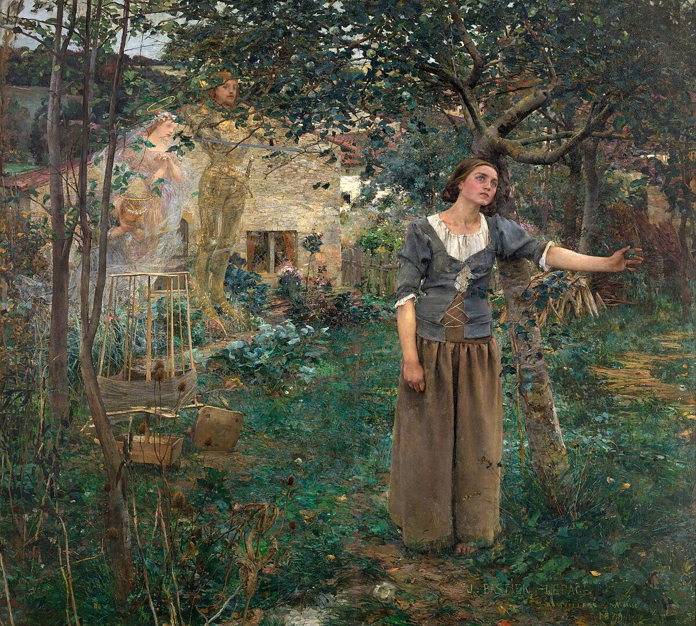
Aeneas carries his father out of a burning city — courage as duty, not glory. Socrates drinks the hemlock rather than abandon his convictions, and Mattie Ross rides into dangerous territory because justice demands it and she will not send someone else. Atticus Finch defends a man the town will condemn, knowing the cost. Moby-Dick asks whether Ahab’s defiance is courage or madness, and Heart of Darkness asks what happens when courage operates without a moral compass.
Heart of Darkness

We open Year 3 with a novella that is short but refuses to be easy. Marlow’s journey upriver into the Congo is a journey into the darkness of empire and the darkness of the self — and Conrad’s layered, circling prose forces students to slow down and wrestle with every sentence. Kurtz’s famous last words raise the question the whole year will keep asking: what happens to a person when every external restraint is removed? After two years of reading, these students are ready for prose that demands more from them. A hundred pages that will generate more discussion than books three times their length.
Where to Find It: Public Domain · Penguin Classics · ThriftBooks
Essay Ideas
- Marlow says Kurtz was “hollow at the core.” What does Conrad mean by hollowness, and is Marlow himself hollow in a different way?
- Conrad has been accused of racism in this novella. Read it carefully and make your own case: is Heart of Darkness an attack on imperialism, a product of imperial thinking, or both?
- Kurtz whispers, “The horror! The horror!” What is the horror? Build your argument from the text, not from vague generalities.
- Compare Marlow’s journey upriver with Odysseus’s journey home in The Odyssey (Year 1). Both are quests — but what does each man find at the end, and what does that difference reveal about what each author believes?
Captains Courageous + Shane


Two short novels paired because they show manly virtue from opposite angles: earned through labor and earned through self-sacrifice. In Captains Courageous, a spoiled rich boy falls overboard and is picked up by fishermen who teach him that respect comes from work, not wealth — Kipling’s prose is muscular and precise, and the transformation feels earned because it is earned. Shane is a modern novel (1949), but it belongs here: it is the archetypal Western, the distilled myth of a gunfighter who defends a homesteading family and then rides away because men like him have no place in the civilization they protect. Together they ask what it means to be a man who is useful rather than merely impressive. Students who read Call of the Wild and Endurance in Year 1 will see familiar questions about competence, humility, and what a person owes the people around them.
Where to Find It: Captains Courageous: Public Domain · Penguin Classics · ThriftBooks Shane: Amazon (Mariner Books) · ThriftBooks
Essay Ideas
- Harvey Cheyne learns to work on the fishing boat. What exactly does Kipling argue that labor teaches a person that privilege cannot?
- Shane rides away at the end. Why? Is his departure a sacrifice, a failure, or something else entirely?
- Compare Harvey’s transformation with Pip’s in Great Expectations (Year 1). Both boys must unlearn what they thought they knew about status. Which transformation is more convincing, and why?
- Both novels argue that a certain kind of manhood is worth admiring. Define what each author means by manliness and evaluate whether their visions are compatible or contradictory.
The Aeneid

Rome’s founding epic and the great counterpoint to Homer’s Odyssey (Year 1). Where Odysseus fights to get home, Aeneas fights to leave home behind and build something new — and where Homer’s heroes pursue personal glory, Virgil’s hero is defined by duty, a word that costs him everything he loves. The poem is gorgeous, heartbreaking, and politically sophisticated in ways that reward careful attention. Students who read the Odyssey in Year 1 now get to see what happens when a later poet answers an earlier one. A note on translations: verse is preferred over prose. Dryden’s is the classic English rendering, and when students read different translations, discussion is richer for it.
Where to Find It: Dryden tr. (public domain) — Project Gutenberg · Standard Ebooks Fagles tr. (Penguin Classics) — Amazon · Fitzgerald tr. (Vintage) — Amazon · ThriftBooks
Essay Ideas
- Aeneas leaves Dido. Is he right to do so? What does Virgil seem to think about the cost of following duty over love?
- Compare Aeneas with Odysseus. Both are heroes, both are wanderers — but what does each epic argue a hero is for?
- Aeneas carries his father out of burning Troy. Why does Virgil begin his hero’s story with this image, and what does it tell you about Roman values versus Greek ones?
- The Aeneid was written to glorify Rome, but it is full of grief. How does Virgil use sorrow to complicate what could have been simple propaganda?
- Virgil’s famous line: “These are the tears of things, and mortal matters touch the mind.” Choose a moment in the poem where this idea is most powerfully present and explain how it works.
Strange Case of Dr Jekyll and Mr Hyde + The Turn of the Screw


Two short Gothic works paired for Halloween and for the deeper question they share: what is hiding behind the respectable surface? Jekyll and Hyde gives us the divided self — a man who discovers that his hidden nature, once released, cannot be put back. The Turn of the Screw gives us a governess who sees ghosts that may or may not be real, and James never tells us which. Together they explore the horror of what we suppress and the unreliability of what we think we perceive. Short and dense, these are ideal texts for close reading and for teaching students to build an argument from ambiguous evidence.
Where to Find It: Jekyll and Hyde: Public Domain · Penguin Classics · ThriftBooks The Turn of the Screw: Public Domain · Penguin Classics · ThriftBooks
Essay Ideas
- Is Hyde a separate person or is he Jekyll’s truest self? What does Stevenson’s answer to this question imply about human nature?
- Are the ghosts in The Turn of the Screw real? Build the strongest case you can for one reading, using specific evidence from the text.
- Both works are about surfaces that conceal something terrible. Compare how Stevenson and James each use the gap between appearance and reality to create horror.
- Compare Jekyll’s self-destruction with Kurtz’s in Heart of Darkness. What does each author believe about what happens when a person’s inner darkness is set free?
Moby

The most ambitious American novel ever attempted, and by November these students are ready for it. Ahab’s obsession with the white whale is the spine of the story, but the real subject is everything — fate, free will, God, nature, work, race, madness, and the limits of human knowledge. Ishmael’s voice holds it all together: meditative, funny, digressive, and deeply humane. The cetology chapters will test students’ patience, which is part of the point — Melville demands that you earn the book’s greatest moments. The essay prompts below are deliberately specific, because a novel this vast requires an anchor.
Where to Find It: Public Domain · Penguin Classics · ThriftBooks
Essay Ideas
- Ahab says, “I’d strike the sun if it insulted me.” Is his defiance heroic, insane, or both? What does Melville seem to think?
- Ishmael survives. Why him? What is it about his character, his outlook, or his role in the novel that makes him the one who lives?
- The cetology chapters — chapters about whale anatomy, whale classification, whale history — interrupt the narrative constantly. Why does Melville include them? What do they do to the reading experience that matters?
- Compare Ahab’s obsession with Gatsby’s in The Great Gatsby (Year 1). Both men pursue something with monomaniacal focus. What does each novel argue about the cost of wanting one thing above all else?
- Father Mapple’s sermon in the Whaleman’s Chapel is one of the great set pieces in American literature. What argument does it make, and how does the rest of the novel respond to it?
The Last Days of Socrates

After the vast ocean of Moby-Dick, a short book that is no less deep. Three dialogues — the Apology, Crito, and Phaedo — follow Socrates from his trial to his execution, and together they ask what it means to live and die by your convictions. In the Apology, Socrates defends himself by refusing to stop asking questions. In the Crito, he refuses to escape prison even when his friends arrange it. In the Phaedo, he drinks the hemlock calmly and spends his last hours arguing that death is not the end. Philosophy here is not abstract — it is a life-and-death practice, and students will feel the weight of that.
Where to Find It: Public Domain (Jowett tr.) · Penguin Classics (Tredennick tr.) · ThriftBooks
Essay Ideas
- Socrates refuses to escape prison in the Crito, even though he believes his conviction is unjust. Is he right? When, if ever, should a person accept an unjust punishment?
- Socrates says “the unexamined life is not worth living.” Is this true? Can you think of a counterargument that Socrates himself would have to take seriously?
- Socrates claims he knows nothing. Is this genuine humility or a rhetorical strategy? What does the way he argues reveal about what he actually believes?
Starship Troopers

A modern novel (1959), but it earns its place: Heinlein’s book is a serious philosophical argument about citizenship, duty, and the price of freedom, wrapped in military science fiction that moves fast enough to carry students into Christmas break. The novel argues that rights must be earned through service — a position that has been debated, attacked, and defended since publication. Whether students agree with its politics or recoil from them, the book forces them to articulate what they believe about the relationship between sacrifice and belonging. Like Gates of Fire (Year 2), it is assigned at West Point — not because the military endorses its politics, but because it forces serious engagement with what citizenship and service actually mean.
Where to Find It: Amazon (Ace) · ThriftBooks
Essay Ideas
- Heinlein argues that only those who serve should vote. Steelman this argument, then dismantle it. Which version is more persuasive?
- Compare the novel’s vision of duty with Aeneas’s in The Aeneid. Both texts argue that individual desire must yield to a larger purpose. Do they agree about what makes that sacrifice worthwhile?
- Is Starship Troopers a celebration of militarism or a serious inquiry into what citizenship requires? Build your case from the text, not from what you’ve heard about the book.
- Rico’s father initially opposes his enlistment and later enlists himself. What does this reversal reveal about Heinlein’s argument, and is it earned by the story or forced by the author?
Middlemarch

This is the break book, assigned over Christmas with six weeks to read it — and it needs every one. Middlemarch is the most ambitious novel in English, a book that builds an entire provincial town and shows how every private choice ripples outward into public consequence. Dorothea Brooke’s idealism, Lydgate’s compromises, Casaubon’s sterile scholarship, and Bulstrode’s buried past weave together into the richest portrait of human society ever written. Eliot’s narrator sees everything and judges with compassion rather than contempt. Students who finished Jane Eyre and Great Expectations in Year 1 are ready for the novel that surpasses them both.
Where to Find It: Public Domain · Penguin Classics · ThriftBooks
Essay Ideas
- Dorothea wants to do great things and ends up doing quiet ones. Is her story a tragedy or a different kind of triumph? What does Eliot seem to believe?
- Lydgate is brilliant and well-intentioned, and he fails. What destroys him — his marriage, his pride, his context, or something else?
- Casaubon’s “Key to All Mythologies” is never finished. What does Eliot use this failed project to say about the difference between genuine scholarship and intellectual vanity?
- Eliot writes, “The growing good of the world is partly dependent on unhistoric acts.” How does the novel itself argue for this claim?
- Compare Dorothea’s idealism with Jane Eyre’s moral independence (Year 1). Both women refuse to settle — but what each refuses, and why, reveals a deep difference. What is it?
Persuasion

Valentine’s timing, and Austen’s most mature novel — quieter and sadder than Pride and Prejudice (Year 1), and for many readers, her finest work. Anne Elliot was persuaded to refuse the man she loved, and the novel asks whether she was right to listen, whether constancy is a virtue or a trap, and whether second chances are real. Austen writes with her usual precision, but the emotional register here is deeper — less sparkling comedy, more autumnal wisdom. After the vast social world of Middlemarch, this intimate story of one woman’s regret and renewal is a welcome change of scale.
Where to Find It: Public Domain · Penguin Classics · ThriftBooks
Essay Ideas
- Was Anne right to be persuaded by Lady Russell eight years before the novel begins? What does Austen seem to think about the duty to follow good advice versus the duty to follow your own heart?
- Compare Anne Elliot with Elizabeth Bennet from Pride and Prejudice (Year 1). Both are Austen heroines, both are intelligent and principled — but they are very different. What does each character reveal about what Austen values?
- Captain Wentworth’s letter — “You pierce my soul” — is one of the great declarations in English literature. What makes it work, and how has Austen prepared the reader to feel its full weight?
- Persuasion is Austen’s last completed novel. How does it differ in tone from Pride and Prejudice, and what might that difference reveal about how Austen’s thinking changed?
Crime and Punishment

The most propulsive novel in any Russian curriculum — it reads like a thriller, and the pages turn themselves. Raskolnikov murders a pawnbroker to prove a theory about himself: that extraordinary men are above moral law. The rest of the novel follows his psychological disintegration as the theory collapses under the weight of his own humanity. Dostoevsky’s question is simple and devastating: can a person put themselves above moral law and survive it? Students who met Kurtz in Heart of Darkness and Jekyll in October will recognize the question — but Dostoevsky goes deeper than either.
Where to Find It: Public Domain (Garnett tr.) · Pevear & Volokhonsky tr. — Amazon · McDuff tr. (Penguin Classics) — Amazon · ThriftBooks
Essay Ideas
- Raskolnikov divides humanity into “ordinary” and “extraordinary” people. Where does this theory come from, why does it appeal to him, and why does it fail?
- Sonya reads Raskolnikov the story of Lazarus. Why this passage? What is Dostoevsky arguing about the possibility of moral resurrection?
- Compare Raskolnikov’s belief that he is above the law with Ahab’s defiance of the universe in Moby-Dick. Both men set themselves against something larger than themselves. What does each novel argue about the result?
- Porfiry, the detective, never has enough evidence to arrest Raskolnikov. How does he get his confession, and what does his method reveal about Dostoevsky’s understanding of guilt?
- Is Raskolnikov’s final conversion in the epilogue convincing? Does the novel earn it, or does Dostoevsky impose it?
True Grit

A modern novel (1968) that earns its place through sheer literary achievement and moral seriousness. Mattie Ross is fourteen, Presbyterian to her bones, and utterly relentless — she hires a U.S. Marshal to track down her father’s killer and refuses to stay behind. Portis writes in Mattie’s voice with biblical cadence and bone-dry wit, creating a narrator as distinctive as Huck Finn or Ishmael. The novel’s central question — what does justice require of us personally, and what does it cost? — places it alongside any classic on this list. After the psychological intensity of Dostoevsky, Portis is a tonic: clear, fast, funny, and deeply serious all at once.
Where to Find It: Amazon (Overlook Press) · ThriftBooks
Essay Ideas
- Mattie insists on pursuing her father’s killer herself. Is her quest for justice admirable, reckless, or both? What does the novel’s ending suggest about the price she pays?
- Rooster Cogburn has “true grit,” according to Mattie. Define what she means by the phrase, and evaluate whether Mattie herself has it in greater measure than Cogburn does.
- Compare Mattie’s voice with Huck Finn’s (Year 1). Both are young narrators telling stories about journeys into dangerous territory. How does each voice shape the reader’s moral experience of the story?
- Mattie’s pursuit of justice is also a pursuit of vengeance. Where is the line between the two, and does the novel think Mattie stays on the right side of it?
Orthodoxy + Mere Christianity


Easter slot, and two works of Christian apologetics paired because Lewis learned from Chesterton and said so. Orthodoxy is wild — Chesterton argues by paradox, surprise, and sheer intellectual joy, circling his way toward faith through wonder rather than logic. Mere Christianity is disciplined — Lewis builds his case step by step with the clarity of a man trained in philosophy and medieval literature. Together they show two brilliant minds tackling the same question from opposite directions. Neither is LDS theology specifically, which is a feature: students engage with Christian argument on its own terms, without feeling like Sunday School.
Where to Find It: Orthodoxy: Public Domain · Amazon (Trevin Wax annotated) · ThriftBooks Mere Christianity: Amazon (HarperOne) · ThriftBooks
Essay Ideas
- Chesterton argues that Christianity is true because it is strange — that its paradoxes match the paradoxes of real life. Choose one of his paradoxes and evaluate whether it is a genuine argument or a rhetorical trick.
- Lewis begins Mere Christianity with the moral law — the claim that all people know right from wrong. Is this starting point as solid as Lewis thinks it is? What are the strongest objections, and how would Lewis answer them?
- Compare Chesterton’s style of argument with Lewis’s. Which is more persuasive to you, and what does your preference reveal about how you think about truth?
- Compare Lewis’s argument about moral law in Mere Christianity with Dostoevsky’s exploration of what happens when someone rejects moral law in Crime and Punishment. Do they arrive at the same conclusion by different routes?
- Lewis wrote The Screwtape Letters (Year 1) and Mere Christianity. How does the same mind that invented Screwtape also produce the disciplined argument of Mere Christianity? What does the contrast reveal about how Lewis thinks about persuasion?
A Tale of Two Cities

The French Revolution, sacrifice, and the most famous opening and closing lines in English literature. Where Great Expectations (Year 1) was comic and personal, this novel is epic and political — Dickens at his most dramatic and least funny, which shows students the full range of what the greatest popular novelist in English could do. Sydney Carton’s final act is one of the great sacrifices in fiction, and it earns its power because Dickens has spent the whole novel showing us a man who believes he is worthless. The novel also forces students to think about revolution, violence, and whether justice pursued without mercy becomes its own tyranny.
Where to Find It: Public Domain · Penguin Classics · ThriftBooks
Essay Ideas
- Sydney Carton says, “It is a far, far better thing that I do, than I have ever done.” What makes his sacrifice meaningful, and how has the novel prepared the reader to believe he means it?
- Dickens portrays the French revolutionaries as both justified in their grievances and monstrous in their methods. How does he hold both truths at once, and what does this reveal about his view of justice?
- Compare Carton’s self-sacrifice with Shane’s departure at the end of Shane. Both men give up their own futures for others. What distinguishes a sacrifice from a surrender?
- Compare this novel’s Dickens with the Dickens of Great Expectations (Year 1). How does the same author produce two such different books, and what does each reveal about his range?
To Kill a Mockingbird

We close Year 3 with moral courage made personal and specific. Atticus Finch defends a man he knows the town will condemn, not because he expects to win but because it is right — and his daughter Scout watches and learns what it means to see the world through someone else’s eyes. The novel is accessible, beloved, and deeply serious about justice, which makes it a satisfying close to a year that opened with Conrad’s darkness and moved through duty, obsession, guilt, and sacrifice. After three years of reading, students can measure Atticus’s quiet courage against every other model of virtue they have encountered. It sends them into the summer knowing that the hardest moral choices are the ones no one will thank you for.
Where to Find It: Amazon (Harper Perennial) · ThriftBooks
Essay Ideas
- Atticus tells Scout, “You never really understand a person until you consider things from his point of view.” How does the novel itself teach the reader to do what Atticus describes?
- Boo Radley and Tom Robinson are both “mockingbirds.” Compare what each character represents and what their fates reveal about the world Lee is portraying.
- Compare Atticus Finch’s moral courage with Socrates’ in The Last Days of Socrates. Both men stand by their convictions at great personal cost. What distinguishes them, and what do they share?
- Look back at Year 3’s reading. Which book challenged your own moral assumptions most directly, and how did it change the way you think? Build your answer around specific passages, not general impressions.
- Is To Kill a Mockingbird a hopeful novel or a devastating one? The answer depends on what you think the novel is really about. Make your case.
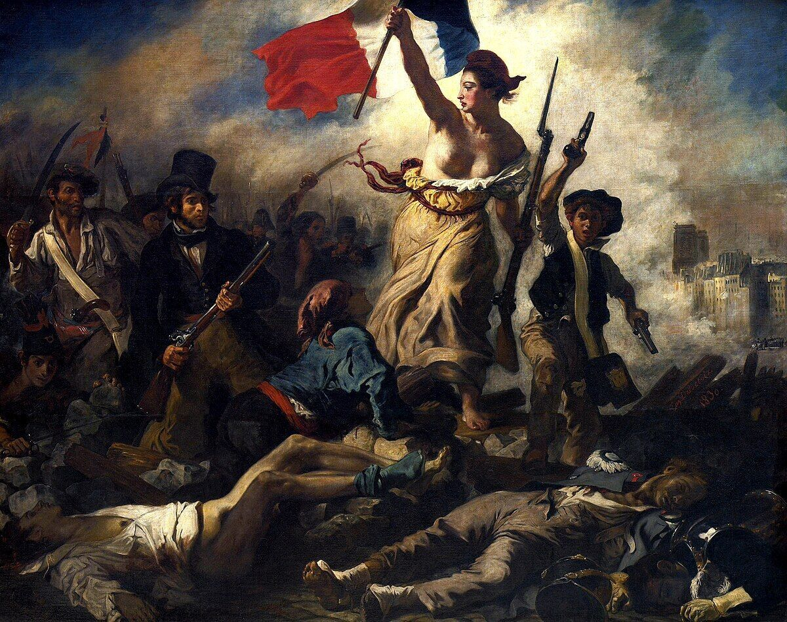
Les Miserables is the ultimate novel of grace — Valjean transformed by the Bishop’s mercy into a man who spends his life trying to be worthy of it. Anna Karenina asks what happens when grace is absent, when society offers judgment but no forgiveness. Hamlet wrestles with whether grace or vengeance should answer murder. Kafka’s Metamorphosis shows a world drained of grace entirely, where even a family’s love has a limit. The Hobbit extends grace through Bilbo’s pity for Gollum, and Dante’s Inferno is the negative image of grace — a map of what the refusal of grace produces.
Metamorphosis and Other Stories

A man wakes up as a giant insect; his family must decide what they owe him. Kafka’s world is absurd, bureaucratic, and terrifying — nothing works the way it should, and no one can explain why. Pair The Metamorphosis with In the Penal Colony, A Hunger Artist, The Judgment, and The Burrow — together they map a mind that sees modern life as a trap no one designed and no one can escape. The strangest opener in the cycle, saved for Year 4 because it rewards readers who have learned to sit with discomfort and resist easy interpretation. After three years of heroism, faith, and moral clarity, Kafka says: what if none of that applies?
Where to Find It: Public Domain (Metamorphosis only) · Penguin Classics Deluxe (Hofmann tr.) · ThriftBooks
Essay Ideas
- Gregor Samsa’s family gradually stops seeing him as human. At what point does the shift happen, and what does Kafka suggest about the relationship between usefulness and love?
- Kafka never explains why Gregor transforms. Does the lack of explanation weaken the story or strengthen it? What does Kafka gain by refusing to give the reader a cause?
- Compare Gregor’s isolation with Robinson Crusoe’s (Year 1). Both men are cut off from normal life. How does each author use isolation to make a different argument about what holds a person together?
- Choose one of the shorter stories — A Hunger Artist, In the Penal Colony, or The Burrow — and explain what Kafka is saying about the relationship between suffering and meaning.
The Hobbit

Bilbo Baggins is small, comfortable, and wants to stay home. His courage is not martial — it is the courage of an ordinary person who chooses to keep going when every instinct says to turn back. Reading The Hobbit now, after years of encountering epic heroes and warriors, reveals the deeper argument Tolkien is making about what heroism actually requires. Thorin’s arc — pride, greed, repentance at death — is serious tragedy disguised as adventure. The contrast between Bilbo’s quiet decency and Thorin’s grandeur raises a question the cycle has been asking since Year 1: which kind of strength matters more?
Where to Find It: Amazon (Mariner, 75th Anniversary) · ThriftBooks
Essay Ideas
- Bilbo spares Gollum out of pity. Tolkien calls this the most important moment in the story. Why? What does Tolkien believe about mercy as a form of courage?
- Thorin dies repentant, admitting that the world would be better if more people valued food and cheer over gold. Is his deathbed change earned by the story, or does Tolkien let him off too easily?
- Compare Bilbo’s heroism with Santiago’s in The Old Man and the Sea (Year 1). Both are unlikely heroes who persist against overwhelming odds. What does each author argue heroism actually looks like?
- Tolkien was a veteran of the Somme. How might his experience of war inform the way he writes about the Battle of Five Armies and its aftermath?
Inferno

The first third of the Divine Comedy, and the only part assigned. Dante journeys through Hell, guided by Virgil — a student who has read the Aeneid (Year 3) will feel the significance of this choice. The Inferno is a poem about justice: every punishment fits the sin, and the architecture of Hell reveals what Dante believes about the moral order of the universe. The poem also asks a question that haunts the entire journey — can a living man look at the consequences of sin and still choose rightly? Prose translations are acceptable, but verse is preferred. Dorothy Sayers’ translation preserves Dante’s original terza rima and is recommended, though multiple translations in the room enrich discussion.
Where to Find It: Longfellow tr. — Project Gutenberg · Sayers tr. (Penguin Classics, recommended) — Amazon · Ciardi tr. — Amazon · Hollander tr. (bilingual) — Amazon · ThriftBooks
Essay Ideas
- Dante places some sinners in deeper circles than others. Choose two punishments and explain what Dante’s ranking reveals about his moral hierarchy — what does he consider worse than what, and why?
- Dante the pilgrim weeps for some of the damned and scorns others. What determines his sympathy, and does the poem endorse or critique his reactions?
- Virgil is Dante’s guide, but he is also a pagan who cannot enter Heaven. What does Dante gain — and what does the poem say about the limits of reason — by making Virgil his teacher?
- Compare Dante’s vision of divine justice with Sophocles’ vision of fate in Oedipus Rex (Year 1). Do both authors believe the universe is morally ordered, or do they disagree about what that order looks like?
- In The Great Divorce (Year 1), Lewis argues that the damned choose Hell — that they get what they truly want. Does Dante’s Inferno make the same argument? Choose two sinners whose punishments look less like arbitrary sentences and more like the natural consequences of desires they refused to give up.
The Picture of Dorian Gray

Wilde’s only novel — a man stays young and beautiful while his portrait ages and decays with every sin. Halloween slot. Where The Importance of Being Earnest and An Ideal Husband (Year 2) showcase Wilde’s comedy, Dorian Gray reveals the moralist underneath the wit. Lord Henry’s philosophy — that experience is everything and morality is merely fashion — sounds liberating until the portrait shows what it costs. The novel asks whether a life lived for beauty and sensation, free from conscience, is freedom or damnation.
Where to Find It: Public Domain · Penguin Classics · ThriftBooks
Essay Ideas
- Lord Henry says, “The only way to get rid of a temptation is to yield to it.” Is the novel proving him right or proving him catastrophically wrong?
- The portrait functions as Dorian’s conscience made visible. What does Wilde suggest about what happens when a person can separate their actions from their consequences?
- Compare Dorian Gray with Victor Frankenstein (Year 1). Both create something they cannot control and refuse to face what they have done. How does each novel use horror to make a moral argument?
- Wilde was famous for insisting that art exists for its own sake. Does Dorian Gray practice that belief, or does it quietly argue the opposite?
- Compare Lord Henry’s influence on Dorian with Screwtape’s strategies in The Screwtape Letters (Year 1). How do both authors portray the mechanics of moral corruption?
The Portrait of a Lady

Isabel Archer is brilliant, independent, and free — and the novel watches her walk into a trap with her eyes open. James writes with extraordinary psychological precision; every sentence reveals something about how people deceive themselves and each other. The longest regular assignment this year, placed in early November when reading energy is high. Isabel’s insistence on choosing her own fate, even when her choices destroy her, makes her one of the most complex heroines in the cycle. After Austen and Bronte (Years 1-2), James shows students a third way of writing about a woman’s intelligence and the world’s refusal to let her use it freely.
Where to Find It: Public Domain · Standard Ebooks · Penguin Classics · Oxford World’s Classics · ThriftBooks
Essay Ideas
- Isabel has every opportunity to avoid her fate — friends warn her, evidence accumulates. Why does she choose Osmond anyway? Is James saying something about the nature of freedom itself?
- Madame Merle says, “Every human being has his shell.” What does James reveal about the difference between a person’s public self and private self, and how does this theme shape the novel’s central betrayal?
- Unlike Elizabeth Bennet and Jane Eyre, Isabel Archer is genuinely free — she has money, independence, and no social pressure to marry badly. Yet she freely chooses the worst possible man. What does James argue about what freedom without wisdom actually produces? Is the novel saying that the ability to choose is meaningless without the judgment to choose well?
- James’s prose is famously dense and indirect. Choose a passage where the style itself enacts the theme — where the difficulty of the sentence mirrors the difficulty of what the character is facing.
- Isabel could have chosen the reliable Caspar Goodwood or the generous Lord Warburton. She chooses the charming, controlling Osmond. What does James believe about the appeal of the dangerous choice over the safe one — and does the novel ultimately judge Isabel, pity her, or both?
Meditations

Private notes written by a Roman emperor to himself about how to live with integrity when the world offers every reason not to. Marcus Aurelius never intended these to be published. They are the most practical philosophy in the cycle — not abstract argument but daily discipline: how to endure pain, resist flattery, do your work, and prepare for death. Very short after The Portrait of a Lady — a deliberate breather. After four years of encountering characters who struggle with virtue, students now read a man who is trying, page by page, to hold himself to the standard.
Where to Find It: Public Domain · Hays tr. (Modern Library) — Amazon · Hammond tr. (Penguin Classics) — Amazon · Hard tr. (Oxford World’s Classics) — Amazon · ThriftBooks
Essay Ideas
- Marcus Aurelius writes to himself, not to an audience. How does this private context change the way you read his advice? Is he more honest because no one was supposed to hear it?
- Marcus says repeatedly that fame is meaningless and death is nothing to fear. Does he sound like a man who believes this, or a man who is trying to convince himself? Find evidence for your reading.
- Compare Marcus Aurelius’s Stoicism with the philosophy that emerges from Ecclesiastes (Year 3). Both confront the brevity and apparent meaninglessness of life. Where do they agree, and where do they diverge?
- Choose one passage from Meditations and explain how it applies to a character from this year’s reading — someone who either follows Marcus’s advice or fails to.
- Marcus Aurelius was emperor of the known world — there are statues of him, armies obeyed him, nations feared him. Yet he writes about not wanting to get out of bed in the morning and having to talk himself into doing his duty. What does this gap between his public stature and his private struggle reveal about virtue? Is it more encouraging or more humbling to learn that even an emperor must argue himself into doing the right thing?
Brave New World

Huxley’s dystopia argues that tyranny will not come through pain but through pleasure — that people will surrender freedom for comfort, entertainment, and the elimination of suffering. Written in 1932, its predictions about pharmaceutical mood control, engineered reproduction, and entertainment-as-sedation have only grown more relevant. No older novel asks this particular question as precisely, which earns it a place in the cycle despite being a modern work. The Savage’s collision with the World State forces the question: is a life without suffering worth living if it is also a life without meaning? Engaging and manageable — good pre-break reading.
Where to Find It: Amazon (Harper Perennial) · ThriftBooks
Essay Ideas
- Mustapha Mond tells the Savage that the World State has chosen happiness over truth. Is this a real choice, or does Huxley believe you cannot have one without the other?
- The Savage quotes Shakespeare constantly in a world that has abolished literature. What is Huxley saying about what a society loses when it eliminates great books?
- Compare Huxley’s dystopia with the world Kafka describes in The Metamorphosis. Both depict people trapped in systems they cannot escape. How does each author diagnose the trap differently?
- Huxley and C.S. Lewis (Year 1) both warn about the dehumanizing consequences of technology and social engineering. Compare their diagnoses — where do they agree, and what does each author think is the cure?
Anna Karenina

This is the break book — assigned over Christmas break with approximately six weeks of reading time. Tolstoy’s masterpiece. Two parallel stories: Anna’s destructive passion for Vronsky, and Levin’s search for meaning through work, family, and faith. The novel is as much about Levin finding God in a Russian field as it is about Anna’s tragedy. Levin’s conversion — earned through honest doubt, not institutional religion — is one of the most powerful spiritual narratives in all of literature. Students who read Tolstoy’s Caucasus novellas in Year 1 now encounter the full scope of his genius.
Where to Find It: Public Domain (Garnett tr.) · Pevear & Volokhonsky tr. (Penguin Classics) — Amazon · Bartlett tr. (Oxford World’s Classics) — Amazon · ThriftBooks
Essay Ideas
- The novel’s epigraph is “Vengeance is mine; I will repay.” Who is being judged — Anna, the society that condemns her, or both? What does Tolstoy believe about the relationship between sin and punishment?
- Levin’s spiritual awakening comes not from a church or a book but from a peasant’s offhand remark. What is Tolstoy saying about where real faith comes from?
- Compare Anna’s trajectory with Dorian Gray’s. Both characters pursue desire at the expense of everything else. How does each author treat the relationship between passion and self-destruction?
- Tolstoy gives equal weight to Levin’s quiet life and Anna’s dramatic one. Why? What argument is he making by refusing to let Anna’s story be the only story?
- Compare Levin’s search for God with Crusoe’s conversion in Robinson Crusoe (Year 1). Which feels more honest, and why?
Little Women

Four sisters figuring out what kind of women they want to become, with poverty, death, faith, and self-denial running underneath the domestic surface. Jo’s struggle between artistic ambition and family obligation is genuinely complex. Beth’s death is earned, not sentimental. The book asks what it means to be good, and what goodness costs — the same question Austen asks in Pride and Prejudice (Year 1), transposed from Regency England to Civil War America. Valentine’s season, and beneath the warmth, a serious novel about sacrifice.
Where to Find It: Public Domain · Penguin Classics · ThriftBooks
Essay Ideas
- Jo is the character most readers love, but Marmee says Beth is the best of them. What does Alcott believe about the difference between being admired and being good?
- Jo refuses Laurie’s proposal. Is she right? What does the novel argue about the relationship between romantic love and a woman’s independence?
- Compare the March sisters’ moral education with the Bennet sisters’ in Pride and Prejudice (Year 1). How does each author use a family of sisters to explore different ways of becoming an adult?
- Alcott reportedly wanted Jo to remain unmarried. Does the ending she wrote — Jo’s marriage to Professor Bhaer — strengthen or weaken the novel’s argument about what women owe themselves?
The Prince

The most famous work of political philosophy ever written — and the most misunderstood. Machiavelli is not celebrating cruelty; he is describing how power actually operates, stripped of every comforting illusion. Short, provocative, and endlessly debatable. After years of reading about virtue, honor, and moral courage, students encounter a thinker who says none of that matters if you cannot hold power. Forces them to defend everything they believe.
Where to Find It: Public Domain · Penguin Classics (Parks tr.) · Oxford World’s Classics (Bondanella tr.) · ThriftBooks
Essay Ideas
- Machiavelli says it is better to be feared than loved. Is he right? Choose a leader from this year’s reading — Thorin, Shackleton (Year 1), or Marcus Aurelius — and test Machiavelli’s claim against their example.
- Is The Prince a manual for tyrants, a warning to citizens, or something else entirely? What evidence in the text supports your reading?
- Compare Machiavelli’s advice to rulers with Marcus Aurelius’s self-instructions in Meditations. Both men think about power and duty. Where do they fundamentally disagree about what a leader owes?
- Machiavelli strips morality out of politics. After reading him, can you put it back in? Argue for or against the claim that effective leadership requires moral compromise.
- Machiavelli writes that you should judge a ruler by results, not intentions. Look at an institution you interact with — a school, a government office, a bureaucracy. What does it actually do, as opposed to what it claims to do? What would Machiavelli say about the gap between stated purpose and actual function?
Gulliver's Travels

Begins as whimsical satire — tiny people, giant people — and ends as one of the most savage indictments of humanity ever written. Swift’s final voyage, Gulliver among the rational horses and bestial Yahoos, is so dark it makes students argue about whether Swift has gone too far or whether he is simply telling the truth. Not the children’s book they might expect. The progression from amusing to disturbing mirrors the cycle itself — students who began Year 1 with adventure stories now encounter a writer who uses fantasy to dismantle every illusion about human nature.
Where to Find It: Public Domain · Penguin Classics · Oxford World’s Classics · ThriftBooks
Essay Ideas
- Gulliver ends the novel unable to tolerate the company of other humans. Has Swift pushed satire past the point of usefulness, or is Gulliver’s disgust the logical conclusion of what the voyages reveal?
- The Houyhnhnms are perfectly rational but lack passion, art, and grief. Is Swift presenting them as an ideal or as a warning? What is missing from their world?
- Compare Swift’s satire with Twain’s in Huckleberry Finn (Year 1). Both use humor to expose human cruelty and hypocrisy. How do their methods and conclusions differ?
- Swift was a clergyman. How does Gulliver’s Travels wrestle with the question of whether human beings are capable of moral improvement — and does the novel’s answer conflict with Christian belief?
- In the voyage to Laputa, Swift savages the academy — scholars who spend years trying to extract sunlight from cucumbers and build houses from the roof down. What is Swift arguing about knowledge pursued for its own sake, divorced from practical use? Is this a comfortable argument for a group of students in a reading circle devoted to great books?
Hamlet

The most famous play ever written. Death, duty, the afterlife, the paralysis of thought, the question of what we owe the dead. Easter slot. Hamlet is Easter-resonant without being devotional — it wrestles with the same ultimate questions from inside a story of murder, madness, and revenge. Shakespeare’s language is dense, but the story is gripping and the questions it raises — about conscience, duty, and what we owe the dead — reward close attention.
Where to Find It: Public Domain · Folger Shakespeare Library · ThriftBooks
Essay Ideas
- Hamlet delays. Why? Is his hesitation a flaw, a virtue, or something more complicated? What does Shakespeare seem to believe about the relationship between thought and action?
- “To be or not to be” is the most famous soliloquy in English. What is Hamlet actually arguing, and what does it reveal about his understanding of death, duty, and the afterlife?
- Compare Hamlet’s paralysis with Antigone’s decisiveness (Year 1). Both face a moral crisis involving the dead. What does each play argue about the right response when duty and survival conflict?
- Claudius prays and Hamlet refuses to kill him. Is Hamlet’s reasoning sincere, or is it another form of delay? What does this scene reveal about both characters?
- The play is full of performances — the play-within-a-play, Hamlet’s “antic disposition,” Claudius’s public piety. What does Shakespeare suggest about the relationship between acting and truth?
The Scarlet Letter

Puritan New England, public shame, private guilt, and the question of whether a community built on moral judgment can survive its own hypocrisy. Hester Prynne endures; Dimmesdale hides. Hawthorne asks which is worse — the sin or the concealment — and his answer is not simple. The novel’s moral architecture is as carefully constructed as Dante’s Inferno — every symbol, every scaffold scene, every use of light and dark builds toward a single question about what truth costs. After four years of reading, students can see Hawthorne’s craft operating at every level.
Where to Find It: Public Domain · Penguin Classics Deluxe · Oxford World’s Classics · ThriftBooks
Essay Ideas
- Hester wears her shame publicly; Dimmesdale hides his. Who suffers more, and what does Hawthorne argue about the relationship between confession and freedom?
- Chillingworth transforms from a wronged husband into something monstrous. What does Hawthorne believe about what the desire for revenge does to the person who holds it?
- Compare Hester’s public punishment with the punishments Dante assigns in the Inferno. How does each author think about the relationship between sin and its consequences?
- The Puritan community condemns Hester but depends on her skill and charity. What is Hawthorne saying about the gap between a community’s stated values and its actual behavior?
- Compare Dimmesdale’s hidden guilt with Hamlet’s tortured conscience. How does concealment destroy each man, and what does each author suggest is the only way out?
Les Miserables (abridged)

The cycle’s final closer, if a student completes all four years. Grace, justice, law, and redemption on an epic scale. Jean Valjean, transformed by the Bishop of Digne’s mercy, spends his life trying to become worthy of it. Javert cannot accept a world where grace overrides law, and his inability to reconcile mercy with justice destroys him. This is the book the entire cycle has been building toward — every question about conscience, duty, forgiveness, and moral courage converges here. Assigned in abridged form; look for an edition that preserves the Bishop of Digne chapters, which are the spiritual heart of the novel. The Norman Denny translation (Penguin) cuts Hugo’s digressions while keeping the full Valjean narrative. Students who love the abridged version should read the full text over the summer.
Where to Find It: Public Domain (unabridged, Hapgood tr.) · Norman Denny tr. (Penguin Classics, recommended abridged) — Amazon · Unabridged: Signet Classics · ThriftBooks
Essay Ideas
- The Bishop of Digne gives Valjean the candlesticks and says, “I have bought your soul for God.” What does Hugo believe about the power of a single act of mercy to change a life?
- Javert is not evil — he is rigidly just. Why does Hugo make the antagonist a man of principle? What does the novel argue about the difference between justice and grace?
- Compare Valjean’s moral transformation with Pip’s in Great Expectations (Year 1) or Levin’s in Anna Karenina. What does each author believe is required for a person to truly change?
- Look back across all four years. Which book or character prepared you most to understand Les Miserables, and why?
- Hugo writes that “to love another person is to see the face of God.” How does this claim hold up against the other visions of love, duty, and faith you have encountered in the cycle?
Year 1: Freedom — Schedule
| Date | Reading | Week |
|---|---|---|
| Sep 11, 2026 | 1 — The Old Man and the Sea | Discussion |
| Sep 18, 2026 | Essays | |
| Sep 25, 2026 | 2 — Call of the Wild + White Fang | Discussion |
| Oct 2, 2026 | Essays | |
| Oct 9, 2026 | 3 — The Odyssey | Discussion |
| Oct 16, 2026 | Essays | |
| Oct 30, 2026 | 4 — Frankenstein | Discussion |
| Nov 6, 2026 | Essays | |
| Nov 13, 2026 | 5 — Jane Eyre | Discussion |
| Nov 20, 2026 | Essays | |
| Dec 4, 2026 | 6 — Oedipus Rex + Antigone | Discussion |
| Dec 11, 2026 | Essays | |
| Dec 18, 2026 | 7 — Robinson Crusoe | Discussion |
| Jan 8, 2027 | Essays | |
| Jan 22, 2027 | 8 — Endurance | Discussion |
| Jan 29, 2027 | Essays | |
| Feb 5, 2027 | 9 — Pride & Prejudice | Discussion |
| Feb 12, 2027 | Essays | |
| Feb 19, 2027 | 10 — Great Expectations | Discussion |
| Feb 26, 2027 | Essays | |
| Mar 5, 2027 | 11 — The Great Gatsby + The Sun Also Rises | Discussion |
| Mar 12, 2027 | Essays | |
| Mar 26, 2027 | 12 — The Screwtape Letters + The Great Divorce | Discussion |
| Apr 2, 2027 | Essays | |
| Apr 9, 2027 | 13 — The Cossacks + Hadji Murad | Discussion |
| Apr 16, 2027 | Essays | |
| Apr 23, 2027 | 14 — Huckleberry Finn | Discussion |
| Apr 30, 2027 | Essays |
Private
Enter the passphrase to view members-only content.
Incorrect passphrase.